3 Probability & Statistics for Machine Learning
Loss Functions & Regularizers leans on words it never builds: likelihood, prior, posterior, MAP (maximum a posteriori estimation — choosing the most plausible parameter value once a prior belief is included), sigmoid, Gaussian/Bernoulli. Its §6 — the picture that names the loss and the regularizer — is literally Bayes’ rule under a logarithm. This chapter builds all of that from zero, so that Loss Functions & Regularizers §6 reads like plain English — and so do two names met later: the “Bayesian” in BPR (Bayesian Personalized Ranking, a loss that teaches a recommender to rank the items a user chose above the rest; Loss Functions & Regularizers §9), and the mutual information (how much knowing one quantity tells you about another; §7) behind InfoNCE (a training loss that learns by contrasting matching pairs of examples with mismatched ones — the NCE stands for noise-contrastive estimation; Self-Supervised & Contrastive Learning).
What this chapter assumes: school algebra, a calculator, and enough Python to read a short listing (§1 and §8.6 print one each). Everything probabilistic is built here from zero, except a few standard results and table values (such as the Law of Large Numbers, areas under the bell curve, the Student-\(t\) curve, the Central Limit Theorem), which are quoted on trust where they are used, usually with a numerical check. The little calculus it touches (the number \(e\), the natural logarithm \(\ln\), slopes with “a smooth curve’s peak has slope \(0\)”, and the chain rule) is gathered in a short toolkit box at the end of §1: the log rules are proved there, and the rest are stated, most with a calculator check; the Calculus primer has the full story.
1. Probability basics
Machine learning (ML) is full of uncertain quantities — will this user click? how far off is this measurement? — and probability is the language that describes them. It starts from one object.
Random variable. A random variable \(X\) is a quantity whose value is uncertain — the outcome of a coin flip, a die roll, tomorrow’s temperature. It takes values in a sample space (the set of possible outcomes: for a die, \(\{1,2,3,4,5,6\}\)). An event is a subset of outcomes (“the die shows an even number”).
Notation. A capital letter such as \(X\) names the random variable itself; the matching lower-case \(x\) stands for one particular value it might take. \(\Pr(\cdot)\) reads “the probability that”, so \(\Pr(X=x)\) is “the probability that \(X\) comes out equal to the value \(x\)” — for a die, \(\Pr(X=3)\) is the chance of rolling a \(3\).
Two kinds.
- Discrete \(X\) takes countably many values (a list you could write one after another: the faces \(1,\dots,6\), or the counts \(0,1,2,\dots\)); described by a probability mass function (PMF) \(p(x) = \Pr(X=x)\), with \(p(x)\ge 0\) and \(\sum_x p(x)=1\) (a fair die: \(p(x)=\tfrac16\) for each face, and six sixths sum to \(1\)).
- Continuous \(X\) takes values on a continuum (every value in a range, such as any height between \(150\) and \(200\) cm); described by a probability density function (PDF) \(p(x)\ge 0\) with \(\int p(x)\,dx = 1\). Here \(p(x)\) is a density, not a probability — you read it by area, never by height (the flat density on \([0,0.5]\) met below has height \(2\), yet its area is \(2\times0.5=1\); the rate intuition is unpacked right after the next figure). (New symbol: the \(\int\) in \(\int p(x)\,dx\) is an integral — read it as “add up the area under the curve \(p(x)\)”, the continuous twin of the sum \(\sum\) for discrete \(x\); the calculus that builds it is the Calculus primer’s job, and all we need here is the area reading.)
PMF vs PDF — the one distinction beginners trip on. Both say “how probability is spread over the values,” but they are read differently. For a PMF you read a height; for a PDF you must measure an area.
| PMF — discrete \(X\) | PDF — continuous \(X\) | |
|---|---|---|
| values | countable: a die, a count, a label | a continuum: height, temperature, wait |
| what \(p(x)\) is | the probability \(\Pr(X{=}x)\) directly | a density — probability per unit width |
| read it as | the bar height is the probability | the area under an interval is the probability |
| one exact value | can be probable: \(\Pr(X{=}3)=\tfrac16\) | has probability \(0\): \(\Pr(X{=}20.000°\mathrm{C}){=}0\) |
| can \(p(x)>1\)? | never (each bar \(\le 1\)) | yes — it is a density, not a probability (a flat density on \([0,0.5]\) has height \(2\)); the total area is what must equal \(1\) (next row) |
| adds to \(1\) via | \(\sum_x p(x)=1\) | \(\int p(x)\,dx=1\) |
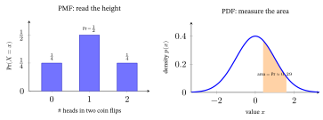
Why a density, not a probability — the rate intuition. A continuous \(X\) has infinitely many possible values (between \(170\) and \(171\) cm alone: \(170.1, 170.11, 170.111,\dots\)). They must share a total probability of \(1\), so each exact value gets zero: if every point held even a sliver of probability, infinitely many would sum to \(\infty\), not \(1\) (with \(0.001\) on each point, just \(1001\) points already total more than \(1\), and a continuum has far more points than that). That is why \(\Pr(X{=}170.000\dots)=0\), and why probability for continuous \(X\) lives on intervals, not points.
So \(p(x)\) cannot be a probability — it is a density, a rate, exactly like mass density on an iron rod (thick in the middle, thin at the ends): the mass at a single point is \(0\) (a point has no width), yet a short stretch of rod has mass \(\approx\) density \(\rho\) (the Greek letter rho) \(\times\) length (exactly, where the density does not change along the stretch). Probability behaves identically: for a small width \(\Delta x\) (read “delta \(x\)” — a small step along the \(x\)-axis), \(\Pr(x\le X\le x{+}\Delta x)\approx p(x)\,\Delta x\). So \(p(x)\) carries units of probability per unit \(x\) — multiply by a width to get a probability; sum the slivers (integrate) to get an interval.
This is also why a density can exceed \(1\): a uniform distribution on \([0,0.5]\) — one whose density is flat, so equally wide stretches of the interval are equally likely — must enclose area \(1\) over a width of \(0.5\), so its height is \(1/0.5=2\) — a perfectly good rate (\(2\times 0.5 = 1\) ✓), even though a probability of \(2\) would be nonsense. Unit check: the \(2\) carries units of probability per unit \(x\), and \(0.5\) carries units of \(x\) — multiplying cancels the \(x\), leaving a plain, unitless probability, exactly like \(\rho\times\text{length}=\text{mass}\) in the rod analogy just above.
The figure Shrink the window below checks the rule \(\Pr\approx p(x)\,\Delta x\) at the bell’s center, where \(p(0)=0.40\): a window of width \(0.2\) around \(0\) holds \(0.0797\), close to \(0.40\times0.2=0.080\), but a window of width \(2\) holds \(0.68\), against \(0.40\times2=0.80\), so the rule needs a small width.
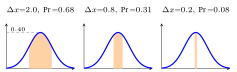
Function vs distribution — two levels, often blurred. The words “\(p(x)\)” and “distribution” get thrown around interchangeably, but they live on different levels:
- A distribution is the object — the whole pattern of how probability is spread over the values of \(X\). “The Gaussian” (the bell curve), “Bernoulli\((0.3)\)” (a coin that lands heads \(30\%\) of the time) — both met properly in §2 — and “this die’s distribution” all name objects.
- A PMF or PDF is a function — a formula \(p(x)\) — that describes that object. It is one representation of the distribution, not the distribution itself.
Two facts pin the difference down:
- One distribution, many functions. The same distribution can be written as its PMF/PDF \(p(x)\) or as its cumulative distribution function (CDF) \(F(x)=\Pr(X\le x)\) — the running total of probability up to \(x\). It is built directly from the PMF or PDF: for a discrete \(X\) it is a running sum of the bars, \(F(x)=\sum_{k\le x}p(k)\); for a continuous \(X\) it is the area under \(p\) to the left of \(x\). Worked number: the fair die gives \(F(3)=\tfrac16+\tfrac16+\tfrac16=\tfrac36=0.5\) — half the probability sits at or below \(3\). (The figure below draws one distribution as both functions: two different curves, one distribution.)
- Not every function is a distribution. A PMF/PDF must be \(\ge0\) and sum/integrate to \(1\); a function that doesn’t is just a function. The likelihood (§4) — the same formula read as a function of the parameter \(\theta\) (a number that fixes which member of a family of distributions you mean, such as a coin’s heads-probability; §2) instead of the data — is a perfectly good function but not a distribution over \(\theta\). For a coin whose heads-probability is \(\theta\), one observed head has probability \(\theta\) itself; read with the head held fixed, as a function of \(\theta\) from \(0\) to \(1\), that straight line encloses area \(\tfrac12\), not \(1\).
So “the distribution \(p(x)\)” is harmless shorthand (the function does pin the object down), but keep the levels straight: the distribution is the what; the function is how you write it down.
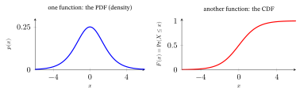
Expectation, mean, variance. The expectation (mean, \(\mu\)) is the probability-weighted average; the variance (\(\sigma^2\)) measures spread (for a fair die, \(\mathbb{E}[X]=3.5\) and \(\operatorname{Var}[X]\approx2.92\), worked below): \[ \mathbb{E}[X] = \sum_x x\,p(x) = \mu, \qquad \operatorname{Var}[X] = \mathbb{E}\big[(X-\mu)^2\big] = \mathbb{E}[X^2] - \mu^2 = \sigma^2 . \]
In words, the variance is the average squared distance from the mean. We square so that misses above and below do not cancel to zero (the die’s signed misses \(-2.5,-1.5,-0.5,0.5,1.5,2.5\) average exactly \(0\)), and so a big miss counts extra. Here \(\mathbb{E}\) of any function \(g\) of \(X\) uses the same weights, \(\mathbb{E}[g(X)]=\sum_x g(x)\,p(x)\), so \(\mathbb{E}[(X-\mu)^2]=\sum_x (x-\mu)^2p(x)\).
For a continuous \(X\) the sum becomes an area, exactly as \(\sum\) became \(\int\) above: \(\mathbb{E}[X]=\int x\,p(x)\,dx\) — the same probability-weighted average, with the density \(p(x)\) as the weight — and likewise \(\operatorname{Var}[X]=\int (x-\mu)^2\,p(x)\,dx\). (Picture the density as a cut-out shape resting on a pin: if it is symmetric about a point, it balances on a pin at that point. The uniform on \([0,0.5]\) met above is a flat rectangle from \(0\) to \(0.5\), so it balances at its midpoint: mean \(0.25\).)
Why the two forms of \(\operatorname{Var}\) are equal (the right-hand one is the shortcut we actually compute with — one pass for \(\mathbb{E}[X^2]\), subtract \(\mu^2\)). Expand the square inside the expectation and use that \(\mathbb{E}\) is linear: the expectation of a sum is the sum of expectations, and constants like \(\mu\) pull out. Two facts about the sum \(\sum_x\big(a\,g(x)+c\,h(x)+b\big)p(x)\) do the work:
- it splits into \(a\sum_x g(x)p(x)+c\sum_x h(x)p(x)+b\sum_x p(x)\), so a sum of terms has the sum of the expectations and a multiplier comes out front;
- \(\sum_x p(x)=1\), so a constant’s expectation is the constant itself.
Die check: \(\mathbb{E}[2X+1]=\tfrac16(3+5+7+9+11+13)=8=2(3.5)+1\). The expansion is then: \[ \begin{aligned} \mathbb{E}\big[(X-\mu)^2\big] &= \mathbb{E}\big[X^2 - 2\mu X + \mu^2\big] = \mathbb{E}[X^2] - 2\mu\,\underbrace{\mathbb{E}[X]}_{=\,\mu} + \mu^2\\[4pt] &= \mathbb{E}[X^2] - 2\mu^2 + \mu^2 = \mathbb{E}[X^2] - \mu^2 . \end{aligned} \]
(The middle step uses \(\mathbb{E}[X]=\mu\), so \(-2\mu\,\mathbb{E}[X]=-2\mu^2\); the two \(\mu^2\) terms then collapse to one.)
Worked example — a fair die. \(p(x)=\tfrac16\) for \(x\in\{1,\dots,6\}\) (the symbol \(\in\) reads “is one of”: \(x\) is one of the numbers 1 to 6). \(\mathbb{E}[X] = \tfrac16(1+2+3+4+5+6) = \tfrac{21}{6} = 3.5\). \(\mathbb{E}[X^2]\) averages the squared faces with the same weights (the rule above, with \(g(x)=x^2\)): \(\mathbb{E}[X^2] = \tfrac16(1+4+9+16+25+36) = \tfrac{91}{6} \approx 15.17\), so \(\operatorname{Var}[X] = \tfrac{91}{6} - 3.5^2 = 15.17 - 12.25 \approx 2.92\) (exactly \(35/12\)). Its square root \(\sigma = \sqrt{\operatorname{Var}[X]}\) is the standard deviation — the spread in the same units as \(X\) (for the die, \(\sigma=\sqrt{35/12}\approx1.71\) faces).
Why 3.5, and not 3 or 4? The mean is the single guess with the smallest average squared miss: guessing \(3.5\) gives an average squared miss of \(2.92\) (the variance), guessing \(3\) or \(4\) gives \(3.17\), and guessing \(1\) gives \(9.17\). Each guess pays the variance plus its squared distance from \(3.5\) (\(0.25\) at \(3\) or \(4\), \(6.25\) at \(1\)), so one guess on each side already shows where the bottom is. (Loss Functions & Regularizers §2.1 asks the same question with misses counted by size, not squared, and gets the median instead.)
Check it in code (a habit worth keeping: verify every worked number you write down):
import numpy as np
x = np.array([1, 2, 3, 4, 5, 6]) # die faces
p = np.full(6, 1/6) # fair-die PMF: each face has prob 1/6
assert np.isclose(p.sum(), 1.0) # a PMF must sum to 1
EX = (x * p).sum() # E[X] = 3.5
VarX = (x**2 * p).sum() - EX**2 # Var[X] = 35/12 = 2.9167
print(EX, VarX) # -> 3.5 2.916666666666666 (that is, 35/12)What these two numbers actually mean. Read \(\mathbb{E}[X]=3.5\) as a long-run average: roll the die a million times and average the faces, and you land very close to \(3.5\) (the typical miss is about \(0.0017\): an average of \(n\) rolls wobbles by \(\sigma/\sqrt n=1.71/\sqrt{10^6}\), as §8.3 shows) — even though you can never roll a \(3.5\). (That the sample average converges to the expectation as samples pile up is the Law of Large Numbers — the reason an average is trustworthy.) Expectation is the balance point of the die’s six bars (figure Expectation as the balance point, below, left), and it need not be a value you can see (for two coin flips, by contrast, the mean, \(1\) head, is also the likeliest count).
Variance in two coffee shops: both can average a \(5\)-minute wait, but if shop A is always \(4\)–\(6\) min while shop B swings \(0\)–\(10\) min, B has the far larger variance — it is the unpredictable one. (Make it two-point: A waits \(4\) or \(6\) minutes equally often, variance \(1\) minute\(^2\), standard deviation \(1\) minute; B waits \(0\) or \(10\), variance \(25\) minutes\(^2\), standard deviation \(5\) minutes.) The same figure, right, draws two bells with one mean and different spreads.
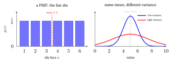
Conditional probability & independence. The probability of \(A\) given that \(B\) happened (defined when \(\Pr(B)>0\): you cannot condition on something that never happens): \[ \Pr(A\mid B) = \frac{\Pr(A\cap B)}{\Pr(B)} . \]
Per component: \(\Pr(A\cap B)\) is the chance \(A\) and \(B\) both happen (\(\cap\) = “intersection”), and dividing by \(\Pr(B)\) restricts the world to the cases where \(B\) already occurred. Why divide? Before you learn anything, \(B\) owns only a share \(\Pr(B)\) of all the cases, and \(A\cap B\) is a share of that same whole. Once you know \(B\) happened, every case outside \(B\) is ruled out, so the surviving cases are the whole world now, and their shares must add to \(100\%\) again. Dividing by \(\Pr(B)\) rescales \(A\cap B\) from “a share of everything” to “a share of the cases where \(B\) happened”. In counts, when every case is equally likely (as with the dice below): \(\Pr(A\mid B)=\dfrac{\#(A\text{ and }B)}{\#B}\), the denominator shrinking from “all cases” to “the cases in \(B\)” (the dice below shrink from \(36\) pairs to \(6\)).
\(A\) and \(B\) are independent if knowing one tells you nothing about the other: \(\Pr(A\cap B)=\Pr(A)\Pr(B)\), equivalently \(\Pr(A\mid B)=\Pr(A)\).
Worked example. Two fair dice, so \(36\) equally likely ordered pairs. \(\Pr(\text{sum}=8 \mid \text{first}=5)\)? Given first \(=5\), the second must be \(3\) (prob \(\tfrac16\)), so the answer is \(\tfrac16\). The formula agrees: \(\Pr(\text{sum}=8\cap\text{first}=5)=\Pr(\text{first}=5,\ \text{second}=3)=\tfrac{1}{36}\) and \(\Pr(\text{first}=5)=\tfrac{6}{36}\), so \(\Pr(\text{sum}=8\mid\text{first}=5)=\tfrac{1/36}{6/36}=\tfrac16\) ✓. Compare the unconditional chance: \(5\) of the \(36\) pairs sum to \(8\) — \((2,6),(3,5),(4,4),(5,3),(6,2)\) — so \(\Pr(\text{sum}=8)=\tfrac{5}{36}\approx 0.139\). Conditioning changed it, so “sum\(=8\)” and “first\(=5\)” are not independent. By contrast, “sum \(=7\)” and “first \(=5\)” are independent: \(\Pr(\text{sum}=7)=\tfrac{6}{36}=\tfrac16\), and given first \(=5\) the second must be \(2\), again \(\tfrac16\).
Conditional probability is a central idea of this chapter: likelihood (§4) and Bayes’ rule (§5) are both built directly on it.
Joint, marginal, and the law of total probability. Three more terms, and one helper (the complement), finish the basics. They are clearest with two random variables \(X\) and \(Y\) instead of single events — say two coins that tend to agree (they return in §7), each coded \(0\) or \(1\). Their joint distribution \(p(x,y)=\Pr(X{=}x\text{ and }Y{=}y)\) gives the chance of each pair of values — for two events it is just \(\Pr(A\cap B)\) — and it is naturally a grid:
| \(Y=0\) | \(Y=1\) | row total \(p(x)\) | |
|---|---|---|---|
| \(X=0\) | \(0.4\) | \(0.1\) | \(0.5\) |
| \(X=1\) | \(0.1\) | \(0.4\) | \(0.5\) |
| column total \(p(y)\) | \(0.5\) | \(0.5\) | \(1\) |
- A marginal is the distribution of one variable alone, got by summing the joint over every value of the variable you don’t care about: \(p(x)=\sum_y p(x,y)\), “marginalizing out” \(Y\) — here \(\Pr(X{=}0)=0.4+0.1=0.5\). The name is literal: the row and column totals, written in the margins of the grid, are the marginals. (One letter, three functions: \(p(x,y)\), \(p(x)\) and \(p(y)\) are the joint, the marginal of \(X\) and the marginal of \(Y\) — the letters in the brackets tell you which.)
- The complement of an event \(B\) is “not \(B\)”, written \(\neg B\) (the sign \(\neg\) reads “not”). Exactly one of \(B\) and \(\neg B\) happens, so \(\Pr(\neg B)=1-\Pr(B)\). For the die, if \(B\) is “an even number”, then \(\neg B\) is “an odd number” and \(\Pr(\neg B)=1-\tfrac12=\tfrac12\).
- The law of total probability: if the cases \(B_1,\dots,B_k\) do not overlap and together cover every outcome (the simplest such pair is \(B\) and \(\neg B\)), then \(\Pr(A)=\sum_j \Pr(A\mid B_j)\,\Pr(B_j)\) — the overall chance of \(A\) is its chance within each case, weighted by how likely each case is. (Each term \(\Pr(A\mid B_j)\Pr(B_j)\) is \(\Pr(A\cap B_j)\), by the definition of conditional probability; the cases do not overlap and cover everything, so these pieces of \(A\) add up to \(\Pr(A)\).) On the grid, with the cases \(X{=}0\) and \(X{=}1\): \(\Pr(Y{=}1\mid X{=}0)=0.1/0.5=0.2\) and \(\Pr(Y{=}1\mid X{=}1)=0.4/0.5=0.8\), so \(\Pr(Y{=}1)=0.2(0.5)+0.8(0.5)=0.5\) ✓ — the column total.
That last formula is the engine of the evidence term in Bayes’ rule (§5) and of the disease-test denominator there — keep it in view.
Takeaway: a distribution says how probability is spread over the values (read heights for a PMF, areas for a PDF); its expectation and variance say where it sits and how widely it spreads; conditioning on what you know rescales the probabilities to the cases that remain, and the law of total probability rebuilds a whole from its cases (expectation and variance return as the \(\mu\) and \(\sigma^2\) of §2’s Gaussian and as the mean and spread that §8’s test is built from).
Toolkit — the few calculus facts this chapter uses. Everything else in this chapter is built from zero or, for a few standard results, quoted on trust where it is used. The log rules below are proved right here, one line each; for the full story of the slopes, see the Calculus primer (§1 for slopes; §2 for \(e\), \(\ln\), their slopes and the rules for combining slopes; §3 for the chain rule).
- The number \(e\approx2.718\) and the exponential. \(\exp(u)\) is shorthand for \(e^{u}\). It is always positive and \(e^{0}=1\); a large positive \(u\) makes it huge, a large negative \(u\) makes it tiny (close to \(0\)). The usual power rules hold: \(e^{a}e^{b}=e^{a+b}\), \((e^{a})^{k}=e^{ka}\) and \(e^{-u}=1/e^{u}\) (so \(e^{-2}=1/e^{2}\approx0.1353\)).
- The natural logarithm \(\ln\) undoes \(e^{x}\). \(\ln y\) is the power you must raise \(e\) to in order to get \(y\), so \(\ln e^{a}=a\) and \(e^{\ln y}=y\); in particular \(\ln 1=0\) and \(\ln e=1\). It turns products into sums, \(\ln(ab)=\ln a+\ln b\) (because \(e^{\ln a+\ln b}=e^{\ln a}e^{\ln b}=ab\)), and so \(\ln\frac1y=-\ln y\) (because \(\ln\frac1y+\ln y=\ln 1=0\)). Powers come down in front, \(\ln(a^{k})=k\ln a\) (because \(e^{k\ln a}=(e^{\ln a})^{k}=a^{k}\); for a whole number \(k\) it is just products-to-sums repeated, as in \(\ln a^{2}=\ln a+\ln a\)). It exists only for \(y>0\), and as \(y\) shrinks toward \(0\), \(\ln y\) heads toward \(-\infty\) (more negative than any number you can name: \(\ln0.001\approx-6.9\), \(\ln0.000001\approx-13.8\)). In this chapter, as in most machine-learning writing, a bare \(\log\) means \(\ln\); the base-\(2\) \(\log_2\) of §7 is always written out.
- The derivative is the slope. \(\frac{df}{dx}\) (also written \(f'(x)\)) is the slope of the curve \(y=f(x)\) at \(x\) — the rise over the run for a tiny step. At the top of a smooth hill the curve is momentarily flat, so a smooth curve’s peak has slope \(0\) (so does the bottom of a valley; §4 checks which one it found). Slopes add, and a constant in front comes along: the slope of \(f+g\) is the slope of \(f\) plus the slope of \(g\), and the slope of \(7f\) is \(7\) times the slope of \(f\) (checked below, once the slopes of \(\ln\) are in hand).
- The chain rule. The slope of a function inside a function is the product of the two slopes: \(\frac{d}{dx}f\big(g(x)\big)=f'\big(g(x)\big)\,g'(x)\) — the outer slope, taken at the inside value, times the inside slope.
- Two slopes that §4 uses: \(\frac{d}{dx}\ln x=\frac1x\) and \(\frac{d}{dx}\ln(1-x)=-\frac{1}{1-x}\) (the second follows from the first by the chain rule: the outer \(\ln\) has slope \(\frac{1}{1-x}\) at the inside value \(1-x\), and the inside \(1-x\) has slope \(-1\)). Calculator checks, rise over run across a tiny step: at \(x=2\), \(\frac{\ln 2.001-\ln 1.999}{0.002}=0.5000=\frac12\) ✓; at \(x=0.5\), \(\frac{\ln(1-0.501)-\ln(1-0.499)}{0.002}=\frac{\ln0.499-\ln0.501}{0.002}=-2.000=-\frac{1}{1-0.5}\) ✓. And the sum and constant rules together: the slope of \(7\ln x+\ln(1-x)\) at \(x=0.25\) is \(7\times4-\tfrac{1}{0.75}=26.667\), and rise over run across a tiny step gives \(26.667\) ✓.
2. The five distributions ML uses most
A recommender has to put a probability on three very different things. Will this user click, yes or no? Which one of five genres will they pick? How far off will a predicted rating be? The first answer is one of two outcomes, the second one of several, the third any number on a scale (it gets two common shapes), and each kind of answer needs its own shape of probability. A fourth question follows: how sure can it be of a click rate it has only estimated from a few clicks? Each of these answers is a distribution in §1’s sense.
§1 established what a distribution is (the object) and how a PMF/PDF describes it. ML leans on a small core of five, below. Learn each one’s shape (gallery at the end of the section) and a typical example, not its formula: each is a recipe for generating a kind of data, and four of them become a loss (a score of how badly a model fits, defined just below) when you take \(-\log\) of them (Loss Functions & Regularizers §6). The fifth, the Beta, is normally used as a prior — a belief about a model’s parameters held before seeing any data (§5), rather than a model of the data itself — and a prior’s \(-\log\) becomes a regularizer instead: a penalty that keeps those parameters well-behaved (§6). It is the job, not the distribution, that decides: used as priors, the Gaussian and the Laplace become regularizers too (§6).
A loss is a single number that scores how badly a model’s predictions fit the data; training a model means adjusting it to make that number small. Taking \(-\log\) of the probability the model gave to what actually happened makes a good loss: a probability near \(1\) costs almost \(0\) (since \(\ln 1=0\); \(0.9\) costs \(0.105\)), while a probability near \(0\) costs a lot (\(0.1\) costs \(2.303\); \(-\ln y\) grows without limit as \(y\) shrinks toward \(0\) — the toolkit box at the end of §1). Call \(-\ln p\) the surprise of an outcome: the less likely you thought it, the more it surprises (and costs). This reading returns in §3 and §7. The whole cast at a glance:
| Distribution | Type | Models — a typical example | Parameters | Shape |
|---|---|---|---|---|
| Bernoulli | discrete | one yes/no — will this user click? | \(p\) | two bars |
| Categorical | discrete | one of \(K\) labels — which of 5 genres? | \(p_1,\dots,p_K\) | \(K\) bars |
| Gaussian | continuous | a real value \(+\) random noise — a height, a price | \(\mu,\sigma^2\) | bell |
| Laplace | continuous | a real value, robust to outliers (a few wildly-off values) | \(\mu,b\) | sharp-peaked bell |
| Beta | continuous | a belief about a probability — a coin’s bias | \(\alpha,\beta\) | blob on \([0,1]\) |
Bernoulli — a single yes/no (a biased coin), after Jacob Bernoulli (Ars Conjectandi, 1713, which proved the first law of large numbers for such yes/no trials). One parameter \(p=\Pr(X=1)\): \[ p(x) = p^{x}(1-p)^{1-x}, \quad x\in\{0,1\}; \qquad \mathbb{E}[X]=p,\ \operatorname{Var}[X]=p(1-p). \]
That formula looks fancy but is just a switch: plug in \(x=1\) and it returns \(p^{1}(1-p)^{0}=p\); plug in \(x=0\) and it returns \(p^{0}(1-p)^{1}=1-p\). It simply picks the right one of the two probabilities.
The mean and variance follow from §1’s definitions in one line each: \(\mathbb{E}[X]=0\cdot(1-p)+1\cdot p=p\); and because \(0^2=0\) and \(1^2=1\), \(\mathbb{E}[X^2]=0^2\cdot(1-p)+1^2\cdot p=p\) too, so \(\operatorname{Var}[X]=\mathbb{E}[X^2]-\mu^2=p-p^2=p(1-p)\). For Bernoulli\((0.3)\): mean \(0.3\), variance \(0.3\times0.7=0.21\).
Two jobs, one letter. Bare \(p\) is the parameter — a fixed number, the coin’s bias — while \(p(x)\) is the function built from it. The switch above is also the proof they’re related: \(p(1)=p^{1}(1-p)^{0}=p\), the function handing the parameter back at \(x=1\).
Use: binary labels (click / no-click). Its \(-\log\) is binary cross-entropy (BCE) (Loss Functions & Regularizers §2.2): a model that says \(0.8\) pays \(-\ln0.8=0.223\) when the user clicks and \(-\ln0.2=1.609\) when not.
Categorical — one roll of a \(K\)-sided die (the name is literal — it picks one category / class). Parameters \(p_1,\dots,p_K\) summing to 1: \[ \Pr(X=c) = p_c , \qquad c\in\{1,\dots,K\},\quad \textstyle\sum_c p_c = 1 . \]
Here \(c\) is the observed class and \(p_c\) its probability. (Repeating the roll \(n\) times and counting how often each class appears gives the multinomial distribution, which other chapters name; no mean or variance is listed because the classes are unordered labels — “average class” is meaningless.) Use: multi-class labels (which of \(5\) genres, which of \(10\) digits): say five genres have probabilities \(0.40,\,0.25,\,0.15,\,0.12,\,0.08\), which sum to \(1\), and the cost \(-\ln p_c\) (the negative log of the true class’s probability; §7) is \(0.92\) if the true genre is the first and \(2.53\) if it is the last. Paired with softmax outputs (§3: softmax turns a model’s list of \(K\) scores into \(K\) probabilities that sum to \(1\)); its \(-\log\) is cross-entropy (§7).
Gaussian (Normal) — the bell curve, parameters mean \(\mu\) and variance \(\sigma^2\), written \(\mathcal N(\mu,\sigma^2)\) for short: \[ p(x) = \frac{1}{\sqrt{2\pi\sigma^2}}\exp\!\Big(\!-\frac{(x-\mu)^2}{2\sigma^2}\Big). \]
Decoded: \(\exp(u)\) is shorthand for \(e^{u}\) (toolkit box, end of §1), and \(e\) raised to a negative power is small — the more negative, the smaller. Inside, \((x-\mu)^2\) is “how far \(x\) is from the center \(\mu\), squared”, and the minus sign turns it into a negative exponent — so the farther out, the smaller the density (the curve’s height; probabilities still come from areas, §1). Dividing by \(2\sigma^2\) makes \(\sigma\) set the width: a bigger \(\sigma\) makes the exponent less negative at any given distance from \(\mu\), so the height falls off more slowly and the bell spreads out (at \(7\) cm from the center the height is \(0.14\) of the peak when \(\sigma=3.5\), \(0.61\) when \(\sigma=7\) and \(0.88\) when \(\sigma=14\)). The front constant \(\frac{1}{\sqrt{2\pi\sigma^2}}\) only rescales things so the area integrates to \(1\).
(Adult women’s heights cluster near \(\mu\approx162\) cm with most within one \(\sigma\approx7\) cm, so heights near \(190\) cm are far less likely than heights near \(162\) cm: the density at \(190\) cm is \(e^{-8}\approx0.0003\) of the density at \(162\) cm. The miss is \((190-162)/7=4\) standard deviations, and the bell falls like \(e^{-4^2/2}\).) These are round numbers close to a recent U.S. survey (Fryar et al., 2025): its mean is \(161.2\) cm, and its 5th and 95th percentiles (\(149.6\) and \(172.5\) cm), which a bell places \(3.29\sigma\) apart, give \(\sigma=22.9/3.29\approx7.0\) cm. Use: real-valued targets, and noise — a random error added on top of a true value (a bathroom scale’s reading is your true weight plus a small random error).
Its \(-\log\) is, up to constants, the squared error \((x-\mu)^2\). The toolkit’s log rules show it: \(\ln(ab)=\ln a+\ln b\) splits \(p(x)\) into its two factors, \(\ln\frac1y=-\ln y\) turns the front constant around, and \(\ln e^{a}=a\) undoes the exponential: \[ \begin{aligned} -\ln p(x)&=-\ln\frac{1}{\sqrt{2\pi\sigma^2}}-\ln\exp\!\Big(\!-\frac{(x-\mu)^2}{2\sigma^2}\Big)\\[4pt] &=\ln\sqrt{2\pi\sigma^2}+\frac{(x-\mu)^2}{2\sigma^2}=\ln\!\big(\sigma\sqrt{2\pi}\big)+\frac{(x-\mu)^2}{2\sigma^2}. \end{aligned} \]
(The last step writes \(\sqrt{2\pi\sigma^2}\) as \(\sigma\sqrt{2\pi}\), since \(\sqrt{\sigma^2}=\sigma\).) The first term does not depend on \(x\) or \(\mu\), and the factor \(\frac{1}{2\sigma^2}\) only rescales the second; neither can change which \(\mu\) fits the data best — that is what “up to constants” means. So the cost of one data point is its squared miss.
Heights (\(\mu=162\), \(\sigma=7\)): \(x=162\) costs \(2.865\); \(x=169\) costs \(2.865+0.5=3.365\); \(x=190\) costs \(2.865+8=10.865\). A miss four times bigger (\(28\) cm vs \(7\) cm) costs \(16\) times more above the constant — the cost grows with the square of the miss. The cost is a parabola in the miss, and three points fix a parabola, so these three heights are the whole curve.
From a cost to a loss. In regression, \(\mu\) is the model’s prediction for an input and \(\sigma\) is held the same for every data point (§4 uses the same fixed \(\sigma\)). Add this cost up over many independent data points (§4 shows why their probabilities multiply, so their logs add) and divide by how many there are, and you get, up to that constant and the factor \(\frac{1}{2\sigma^2}\), the mean squared error (MSE) — which is why MSE is the default loss for regression (predicting a real number, such as a price). For the three heights above, all predicted as \(\mu=162\), the squared misses are \(0\), \(49\) and \(784\), so the MSE is \(833/3=277.7\) cm\(^2\), and the average cost is \(2.865+833/294=2.865+2.833=5.698\) (\(294=3\times2\sigma^2\)), the mean of \(2.865\), \(3.365\) and \(10.865\): the constant plus \(\text{MSE}/(2\sigma^2)\).
Why the name: after Carl Friedrich Gauss (1809), who derived it as the error law that makes the arithmetic mean the most likely estimate. The curve itself is older: in 1733 Abraham de Moivre found it as the limiting shape of the counts of heads in many fair coin flips (de Moivre, 1738; Pearson, 1926). “Normal” is not a claim that other distributions are abnormal: the name’s origin is debated (one common account ties it to the normal equations of least squares, normal meaning perpendicular).
Laplace — a sharper-peaked, heavier-tailed cousin (more probability far from the center, in the curve’s tails, its far left and far right ends), parameters center \(\mu\) and scale \(b\): \[ p(x) = \frac{1}{2b}\exp\!\Big(\!-\frac{|x-\mu|}{b}\Big). \]
Its mean is \(\mu\) and its variance is \(2b^2\) (taken as given here; for \(b=1\) a numerical integral returns \(2.000\)), so its standard deviation is \(\sqrt2\,b\): \(b\) is the width knob, as \(\sigma\) is for the Gaussian, though not itself the standard deviation. (The comparison figure below uses \(b=1/\sqrt2\), giving variance \(1\) to match a Gaussian with \(\sigma=1\); the small gallery at the end of this section uses \(b=1\).)
Why the name: after Pierre-Simon Laplace, who studied it in 1774 (his “first law of errors”). Reading the shape: the only change in the exponent’s shape is \(|x-\mu|\) in place of \((x-\mu)^2\) — absolute value instead of square — and that one swap does three visible things:
- A sharp peak at the center. The Gaussian’s exponent \((x-\mu)^2\) is flat at \(\mu\), so the bell is rounded on top. The Laplace’s \(|x-\mu|\) is a V whose point sits at \(\mu\) — it has a kink (a sharp corner, called a cusp in the figure labels) — so the curve comes to a pointed tip, and its exponent falls at a steady slope on both sides, so the density loses the same fraction of its height with every step away from \(\mu\) (with the gallery’s \(b=1\), each unit step keeps \(e^{-1}=0.37\) of the height: \(0.50\), \(0.18\), \(0.068\) at distances \(0\), \(1\), \(2\)).
- More probability beside the peak. Normalizing the pointed shape to total probability \(1\) piles more probability right beside \(\mu\). Take both shapes with peak height \(1\) and equal variance (\(\sigma=1\), so \(b=1/\sqrt2\); no figure draws this): the Laplace tent encloses \(2b=1.41\) and the bell \(\sigma\sqrt{2\pi}=2.51\), so scaling each to area \(1\) gives peaks \(1/1.41=0.71\) and \(1/2.51=0.40\) — the two peaks the comparison figure shows. In numbers: \(51\%\) of Laplace values land within half a standard deviation of \(\mu\), against \(38\%\) for the Gaussian. As a bet: “most errors are tiny, a few are huge” (Laplace) versus “errors are moderate and almost never huge” (Gaussian). §6 turns this pointed tip into the L1 penalty.
- Heavier tails. \(e^{-|x|}\) dies far slower than \(e^{-x^2}\), so a large deviation, though rare, is much likelier than under a Gaussian: beyond three standard deviations the Laplace has \(1.4\%\) of its probability against the Gaussian’s \(0.27\%\) — about five times as much. (For the Laplace the chance of landing farther than \(t\) from \(\mu\) is exactly \(e^{-t/b}\); three standard deviations is \(t=3\sqrt2\,b\), since the standard deviation is \(\sqrt2\,b\), so \(e^{-3\sqrt2}\approx1.4\%\); the Gaussian’s \(0.27\%\) is taken as given here, the standard value listed in printed tables of the normal distribution.) A few big outliers are expected, not shocking.
The heavier tails are what make a Laplace fit robust: a wild value is cheap to explain. The Laplace’s \(-\log\) is, up to constants, the absolute error: \(-\ln p(x)=\ln(2b)+\frac{|x-\mu|}{b}\), and averaged over the data that gives the mean absolute error (MAE) (predicting \(3\) for the data \(1,2,3,4,100\) below misses by \(2,1,0,1,97\): an MAE of \(101/5=20.2\)) — which grows only linearly, so one wild outlier (a mansion among ordinary house prices) barely tugs a Laplace/MAE fit, while a Gaussian/MSE fit, with its squared error, lurches toward it.
Said another way: the value that best fits data is the outlier-chasing mean under a Gaussian, but the outlier-resistant median (the middle value once the data are sorted) under a Laplace — the same reason we quote a median house price as the honest “typical” one. Use: a real-valued target that a few wild values can corrupt (house prices, a rating logged wrong).
Check it on five numbers: for the data \(1,2,3,4,100\) (one mansion), the single value \(c\) that makes the total squared error \(\sum(x-c)^2\) smallest is the mean, \(22\) — dragged far from the bulk by the outlier — while the value that makes the total absolute error \(\sum|x-c|\) smallest is the median, \(3\), unmoved. (Totals: \(\sum(x-22)^2=7610<\sum(x-3)^2=9415\), but \(\sum|x-3|=101<\sum|x-22|=156\); as means, an MAE of \(20.2\) at the median against \(31.2\) at the mean. The neighbors do worse: \(\sum(x-c)^2\) is \(7615\), \(7610\), \(7615\) at \(c=21,22,23\), and \(\sum|x-c|\) is \(102\), \(101\), \(102\) at \(c=2,3,4\). Both totals are single valleys in \(c\), so one neighbour on each side that does worse is enough to show where the bottom is.)
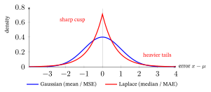
Beta — a distribution over a probability \(\theta\in[0,1]\), parameters \(\alpha,\beta>0\): \[ p(\theta) \propto \theta^{\alpha-1}(1-\theta)^{\beta-1}, \qquad \mathbb{E}[\theta]=\frac{\alpha}{\alpha+\beta}. \]
(The mean, like the variance below, is taken as given here.)
The sign \(\propto\) reads “is proportional to”: equal up to a constant multiplier that does not depend on \(\theta\). Here the missing multiplier is whatever number makes the total area under the curve equal \(1\) — the normalizing constant. For Beta\((2,2)\) it is \(6\), so \(p(\theta)=6\,\theta(1-\theta)\); for Beta\((5,2)\) it is \(30\).
Why the name: its normalizing constant is \(1/B(\alpha,\beta)\), where \(B\) is Euler’s Beta function, so the distribution borrows the name. \(B(\alpha,\beta)\) is just the area under \(\theta^{\alpha-1}(1-\theta)^{\beta-1}\) between \(0\) and \(1\), so dividing by it makes the total area \(1\): for Beta\((2,2)\) that area is \(\tfrac16\), hence the \(6\) above. (This \(B\) names a function; it has nothing to do with the events \(A\) and \(B\) of §1.)
The strange part — “a distribution over a probability” — is simple with our running coin: you don’t know its bias \(\theta\) (its \(\Pr(\text{head})\)), so rather than commit to one number you hold a whole belief curve over every bias in \([0,1]\). That curve \(p(\theta)\) is a density over \(\theta\) (§1): its height can exceed \(1\) (Beta\((5,2)\) peaks at \(2.46\), at \(\theta=0.8\)); only areas under it are probabilities, and its total area is \(1\).
The intuition that makes Beta click is pseudo-counts: \(\text{Beta}(\alpha,\beta)\) behaves as if you had already seen \(\alpha-1\) heads and \(\beta-1\) tails (a reading that works for \(\alpha,\beta\ge1\); below \(1\) the counts turn negative, and the curve shoots up at \(\theta=0\) when \(\alpha<1\) and at \(\theta=1\) when \(\beta<1\)).
- \(\text{Beta}(1,1)\) — seen \(0,0\) — is dead flat: every bias equally plausible (“no idea”).
- \(\text{Beta}(2,2)\) — seen \(1\) head, \(1\) tail — a gentle hill at \(0.5\) (“probably fairish”).
- \(\text{Beta}(5,2)\) — seen \(4\) heads, \(1\) tail — leans toward \(1\) (“probably heads-heavy”).
The pseudo-counts tell you where the curve peaks — its mode, the highest point of the curve (the most plausible value), \(\frac{\alpha-1}{\alpha+\beta-2}\) when \(\alpha,\beta>1\) (§6 derives it). Beta\((2,5)\) — seen \(1\) head, \(4\) tails — peaks at \(\frac15=0.2\). Its mean \(\frac{\alpha}{\alpha+\beta}=\frac27\approx0.286\) sits a little closer to the middle, because the curve has a long right tail that pulls the balance point toward it. At a fixed total \(\alpha+\beta\) (and \(\alpha,\beta>1\)), mode and mean move the same way as the ratio \(\alpha:\beta\) changes: Beta\((2,5)\) has mode \(0.2\) and mean \(0.286\), Beta\((5,2)\) mode \(0.8\) and mean \(0.714\).
So Beta has two knobs: the ratio \(\alpha:\beta\) sets where the belief sits (mean \(\alpha/(\alpha+\beta)\)), and the total \(\alpha+\beta\) sets how sharp it is (a larger total → a narrower, more confident curve): concretely the variance \(\operatorname{Var}[\theta]=\dfrac{\alpha\beta}{(\alpha+\beta)^2(\alpha+\beta+1)}\) shrinks as the total \(\alpha+\beta\) grows: \(\text{Beta}(2,2)\) has variance \(0.050\) (standard deviation \(0.22\)), \(\text{Beta}(10,10)\) has \(0.0119\) (\(0.109\)) and \(\text{Beta}(20,20)\) has \(0.0061\) (\(0.078\)) — the same mean \(0.5\) each time, and the variance falls at every step up in the total \(\alpha+\beta\) (\(4\), \(20\), \(40\)): ten times the total (\(40\) against \(4\); in pseudo-counts, \(38\) flips against \(2\)) gives about an eighth of the variance.
Use: a prior on the coin’s bias (a user’s click rate is such a bias, the opener’s fourth question) — your belief about the bias before seeing any flips (defined properly in §5). After you flip the coin and add the real counts, the posterior — the updated belief after the flips — is again a Beta, \(\text{Beta}(\alpha+\text{heads},\,\beta+\text{tails})\). A prior with this “stays in the same family after updating” property is called conjugate: a Beta\((2,2)\) prior and \(7\) heads in \(10\) flips give the posterior Beta\((9,5)\), mean \(9/14=0.643\) (§6 finds its peak, \(0.667\)). That “just add your counts” update is exactly what turns §6’s MAP (maximum a posteriori estimation — picking the most plausible bias once the prior is included) into a one-liner.
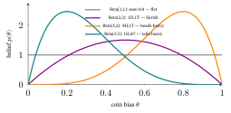
The table to remember.
Distribution Models \(-\log\) of it (up to constants) Becomes Gaussian real value + noise \((x-\mu)^2\) MSE loss Laplace real value, robust \(\lvert x-\mu\rvert\) MAE loss Bernoulli one yes/no \(-[y\log p+(1{-}y)\log(1{-}p)]\) BCE loss Categorical one of \(K\) \(-\log p_{c^\star}\) cross-entropy loss Beta a belief about a probability \(\theta\) \(-(\alpha{-}1)\log\theta-(\beta{-}1)\log(1{-}\theta)\) a prior’s regularizer (§6 uses it in the coin’s MAP) Here \(y\in\{0,1\}\) is the observed label (the \(x\) of the Bernoulli formula), \(c^\star\) is the observed (true) class, and \(\log\) is the natural log \(\ln\). The Gaussian, Laplace and Beta rows drop constants (and, for the first two, the scale factors \(\frac{1}{2\sigma^2}\) and \(\frac1b\)) that never change the best fit; the Bernoulli and Categorical rows are exact.
“Choosing a loss” and “assuming a noise distribution” are the same act, viewed through a logarithm. The first four rows use a distribution as a model of the data, so their \(-\log\) is a loss; the Beta row uses it as a prior on a parameter, so its \(-\log\) is a regularizer. §6 derives the L2 penalty (the sum of the squared parameters) from a Gaussian prior and the L1 penalty (the sum of their absolute values) from a Laplace prior.
Loss Functions & Regularizers §6 tabulates exactly that pairing: the Gaussian, Laplace and Bernoulli loss rows above, beside those two regularizer rows.
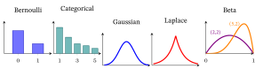
3. Odds, the logit, the sigmoid and softmax
A model that predicts whether a user will click hands back a raw score \(z\), a number such as \(2.3\) or \(-0.7\) that can be as large or as negative as it likes. It might be a dot product (multiply two lists of numbers entry by entry and add up the results; Linear-Algebra primer), or the output of a neural network’s last layer (Neural Networks & Back-propagation). A probability must live in \([0,1]\). The sigmoid, an S-shaped curve that squeezes any score into that range, is the bridge — and to see why it has its exact shape, start with odds.
Odds. If an event has probability \(p\), its odds are \(\dfrac{p}{1-p}\). A coin that lands heads with \(p=0.8\) has odds \(0.8/0.2=4\): it is \(4\times\) as likely to land heads as not. (This coin’s bias is simply given; the coin of §4–§6 has an unknown bias we must estimate.) Odds live in \([0,\infty)\): below \(1\) = unlikely, exactly \(1\) = an even bet (\(p=0.5\)), above \(1\) = likely. (A square bracket includes its endpoint and a round one excludes it: odds can be exactly \(0\) but have no upper end.) Odds are how gamblers and doctors talk: “odds of \(3\) to \(1\) in favor” means \(p=\tfrac{3}{4}=0.75\). (Bookmakers usually quote odds against, so a bookmaker’s “\(3\) to \(1\)” means \(p=\tfrac14\).) To go back from odds to a probability: \(p=\dfrac{\text{odds}}{1+\text{odds}}\).
Logit (log-odds). Take the log of the odds: \(\operatorname{logit}(p)=\ln\dfrac{p}{1-p}\). Piece by piece — the inner \(\tfrac{p}{1-p}\) is the odds, and the outer \(\ln(\cdot)\) stretches them across the whole line. As \(p\) approaches \(0\) (written \(p\to0\)), the odds approach \(0\) and their log heads toward \(-\infty\), more negative than any number you name; odds \(=1\) (\(p=0.5\)) give \(\ln 1=0\); and as \(p\to1\) the odds grow without limit and so does their log, toward \(+\infty\). (In \(p\to0\) the arrow reads “approaches”; between two different things, as in the map from \(p\) to a score \(z\) just below, it will mean “becomes”.) So \(\operatorname{logit}\) maps \(p\in(0,1)\) onto the entire real line \((-\infty,\infty)\) — exactly the range of a model score, so it is natural to let the score be the log-odds. (Why the name: Joseph Berkson coined logit in 1944, by analogy with the earlier “probit”.)
For the \(p=0.8\) coin: odds \(4\), logit \(\ln4=1.386\). Six probabilities side by side:
| \(p\) | odds \(\frac{p}{1-p}\) | logit \(\ln(\text{odds})\) | reading |
|---|---|---|---|
| \(0.1\) | \(0.111\) | \(-2.197\) | unlikely: a negative score |
| \(0.5\) | \(1\) | \(0\) | an even bet: score \(0\) |
| \(0.8\) | \(4\) | \(1.386\) | the coin above |
| \(0.9\) | \(9\) | \(2.197\) | the mirror of \(0.1\): \(\operatorname{logit}(0.9)=-\operatorname{logit}(0.1)\) |
| \(0.9878\) | \(81\) | \(4.394\) | one more step of \(2.197\): odds \(\times9\) again, but \(p\) gains only \(0.0878\) |
| \(0.99\) | \(99\) | \(4.595\) | almost certain, yet the score is only \(4.6\): the log tames the odds |
Sigmoid = the inverse. Solve \(z=\ln\frac{p}{1-p}\) for \(p\), one move at a time (the toolkit box’s rules): undo the \(\ln\) by raising \(e\) to both sides, \(e^{z}=\frac{p}{1-p}\); multiply out, \(e^{z}(1-p)=p\), so \(e^{z}=p+p\,e^{z}=p\,(1+e^{z})\); divide, \(p=\frac{e^{z}}{1+e^{z}}\); finally divide top and bottom by \(e^{z}\) (using \(e^{-z}=1/e^{z}\)). The result is the logistic sigmoid (here \(\sigma\) denotes the sigmoid function — a separate use of the letter from the standard deviation \(\sigma = \sqrt{\operatorname{Var}[X]}\) of §1; context disambiguates): \[ \sigma(z) = \frac{1}{1+e^{-z}} \in (0,1). \]
(Exercise E3 runs odds, logit and sigmoid on a second coin, \(p=0.7\).)
Component by component: \(e^{-z}\) flips the score’s sign and turns it into a positive number (a big positive \(z\Rightarrow e^{-z}\to0\); a big negative \(z\Rightarrow e^{-z}\to\infty\)); the \(1+\) holds the denominator above \(1\), so the reciprocal stays inside \((0,1)\); and at \(z=0\), \(e^{0}=1\) gives exactly \(\tfrac12\). So it squashes any score \(z\) into a probability. Why the names: sigmoid means “shaped like the letter sigma”, the Greek S, with “-oid” meaning “like”; logistic because the S-curve is Verhulst’s 1838 logistic growth law. Two names, one curve. Key properties:
- \(\sigma(0)=0.5\); \(\;\sigma(-z)=1-\sigma(z)\) (symmetry: \(\sigma(-2)=0.1192=1-0.8808\)); \(\;\sigma(z)\to0\) as \(z\to-\infty\) and \(\sigma(z)\to1\) as \(z\to+\infty\).
- Derivative (slope) \(\sigma'(z)=\sigma(z)\,(1-\sigma(z))\) (derived in the Calculus primer §3) — the reason the gradients (the slopes a model follows downhill as it trains) of logistic regression (a model that turns a weighted sum of features into a probability with \(\sigma\)) are so clean: with binary cross-entropy and a click (label \(1\)), the loss is \(-\ln\sigma(z)\) and its slope with respect to the score is \(-\sigma'(z)/\sigma(z)=\sigma(z)-1\), the prediction minus the label (at \(z=2\), \(0.881-1=-0.119\)); a no-click (label \(0\)) costs \(-\ln\big(1-\sigma(z)\big)\), with slope \(\sigma(z)\), again the prediction minus the label (at \(z=2\), \(0.881-0=0.881\)).
Why \(\sigma'=\sigma(1-\sigma)\). The logit undoes the sigmoid, so for every score \(z\), \(z=\ln\sigma(z)-\ln\big(1-\sigma(z)\big)\) (the log of the odds, split with the toolkit’s log rules). Two sides that are equal for every \(z\) trace one curve, so they have one slope. The left side’s slope is \(1\). On the right, the chain rule with the toolkit’s two slopes gives \(\frac{\sigma'}{\sigma}+\frac{\sigma'}{1-\sigma}=\frac{\sigma'}{\sigma(1-\sigma)}\) (over the common bottom \(\sigma(1-\sigma)\) the tops add to \((1-\sigma)+\sigma=1\)). So \(1=\frac{\sigma'}{\sigma(1-\sigma)}\), that is, \(\sigma'(z)=\sigma(z)\,(1-\sigma(z))\) — no new constants, just the sigmoid and its complement.
Here the shape it implies is what counts — the slope is largest at \(z=0\), where \(\sigma'=0.25\) (against \(0.105\) at \(z=2\), below), and vanishes into both tails: \(0.0066\) at \(z=\pm5\) (\(\sigma\) and \(1-\sigma\) add to \(1\), and two numbers with a fixed sum have their largest product when they are equal, \(\tfrac12\cdot\tfrac12=0.25\) at \(z=0\), against \(0.8\times0.2=0.16\)). \(\sigma'\) is the same at \(z\) and \(-z\) and only falls as \(z\) moves away from \(0\), so the values at \(0\), \(2\) and \(5\) show the whole bump. You can also check the formula without calculus, as rise over run across a tiny step (toolkit box): at \(z=2\), \(\frac{\sigma(2.001)-\sigma(1.999)}{0.002}=\frac{0.880902-0.880692}{0.002}=0.105\), exactly the \(\sigma(2)\,(1-\sigma(2))\) of the worked example below.
Worked example. Score \(z=2\). Then \(e^{-2}=0.1353\), so \(\sigma(2)=\dfrac{1}{1.1353}=0.8808\). Check via odds: \(\dfrac{0.8808}{1-0.8808}=\dfrac{0.8808}{0.1192}=7.389=e^{2}\) ✓ — the odds are exactly \(e^{z}\), confirming “score = log-odds.” Slope there: \(\sigma'(2)=0.8808\times0.1192=0.105\).
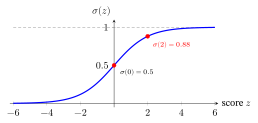
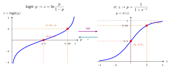
Why logarithms — and why \(-\log\)? Logs are everywhere in ML for three concrete reasons:
- Products become sums. A likelihood is a product over data points, \(\prod_i p_i\) (the capital Greek pi \(\prod\) multiplies the terms the way \(\sum\) adds them) — the numbers underflow (get too small for a computer to store, so it keeps \(0\): \(400\) factors of \(0.1\) multiply to \(10^{-400}\), stored as \(0\), while their logs add to \(-921\)) and the product is awkward to differentiate. \(\log\prod_i p_i=\sum_i\log p_i\) turns it into a stable sum, differentiable term by term. (That is why §4 maximizes the log-likelihood, not the likelihood.)
- \(\log\) is monotonic — increasing: a bigger input always gives a bigger output (\(a<b\Rightarrow\log a<\log b\)) — so it never changes which input is the biggest. Rank any list of numbers, take the log of each, and the ranking is the same (take \(0.2<0.3<0.5\): their logs, \(-1.609<-1.204<-0.693\), keep the same order); so the \(\theta\) that maximizes the likelihood is also the \(\theta\) that maximizes its log, and the numerical convenience is free (§4 checks this on a real coin).
- \(-\log p\) is “surprise,” a ready-made cost. A certain event (\(p=1\)) carries \(-\log 1=0\) surprise; a rare one (\(p\to0\)) carries \(-\log p\to\infty\). So \(-\log p\) — taking \(p\) to be the probability the model put on the right answer — is a natural loss: near \(0\) when the model was confident and right, exploding when confidently wrong (§2: \(0.105\) at \(0.9\), \(2.303\) at \(0.1\)). Every \(-\log\) loss in the book — BCE, cross-entropy, NLL (negative log-likelihood, §4) — is exactly this. Averaged over the data, it is the cross-entropy, defined in §7, where it is shown never to fall below the entropy of those same data (the best any model could do); the gap is the Kullback–Leibler (KL) divergence.
A caveat on continuous outcomes. The “near \(0\) when the model was confident and right” reading holds when the outcome is discrete (a label, a class). For a continuous target, \(p\) is a density, so a perfect prediction costs a constant that need not be near \(0\) (§2’s heights: \(2.865\) at \(\sigma=7\); at \(\sigma=0.1\) it is \(-1.384\)), and only the part that changes with the prediction matters.
Softmax — turning \(K\) scores into a distribution
For multi-class problems the softmax generalizes the sigmoid. Given a list of \(K\) scores \(\mathbf z=[z_1,\dots,z_K]\) (bold for a list of numbers), softmax returns \(K\) numbers; its \(c\)-th entry is
\[ \operatorname{softmax}(\mathbf z)_c=\frac{e^{z_c}}{\sum_{k}e^{z_k}}, \]
where the numerator \(e^{z_c}\) is class \(c\)’s positive weight and the denominator \(\sum_k e^{z_k}\) is the normalizer (the total) — together, \(K\) positive numbers that sum to \(1\), a probability distribution over the classes.
Worked example. Scores \(\mathbf z=[2,1,0]\): \(e^2,e^1,e^0 = 7.39,\,2.72,\,1.00\), summing to \(11.11\), so \(\operatorname{softmax}=[0.665,\,0.245,\,0.090]\) (they sum to \(1\)). The top score takes the lion’s share, the rest keep nonzero probability. Two apart in score means \(e^{2}=7.39\) times apart in share (\(0.665/0.090\)): softmax answers only to score differences.
Why exponentiate? \(e^{z}\) is always positive (valid probabilities), monotonic (a bigger score \(\to\) a bigger share), and smooth (it has a slope everywhere, so gradient descent — training by repeatedly stepping downhill along the slope, Calculus primer §5 — works); it also makes the largest score dominate — a soft version of the argmax (which picks which position holds the largest score; written as a list, \([1,0,0]\) for \([2,1,0]\)), hence soft-max: instead of one winner, every class keeps a share that leans toward the largest.
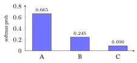
A temperature \(\tau\) (the Greek letter tau) tunes the sharpness — feed \(\mathbf z/\tau\) (every score divided by \(\tau\)). A small \(\tau\) gives a nearly one-hot output (almost all the probability on one class; exactly one-hot means a single \(1\) and \(0\)s elsewhere, like \([1,0,0]\)): confident. A large \(\tau\) gives a nearly uniform output (every class about equally likely): unsure.
With \(\mathbf z=[2,1,0]\): \(\tau=0.5\) gives \([0.867,\,0.117,\,0.016]\), \(\tau=1\) gives the \([0.665,\,0.245,\,0.090]\) above, and \(\tau=2\) gives \([0.506,\,0.307,\,0.186]\); at the ends, \(\tau=0.1\) gives \([1.000,\,0.000,\,0.000]\) (\(0.99995\) on the first) and \(\tau=10\) gives \([0.367,\,0.332,\,0.301]\). The top share only falls as \(\tau\) grows, from \(1\) toward \(\tfrac13\), so five temperatures from \(0.1\) to \(10\) cover its whole range. (The formula is physics’ Boltzmann distribution, where \(\tau\) plays the part of temperature and the scores that of negative energies — the name’s origin.) With \(K=2\), softmax reduces to a sigmoid of the score difference — divide top and bottom by \(e^{z_2}\): \[ \operatorname{softmax}(\mathbf z)_2=\frac{e^{z_2}}{e^{z_1}+e^{z_2}}=\frac{1}{e^{z_1-z_2}+1}=\frac{1}{1+e^{-(z_2-z_1)}}=\sigma(z_2-z_1) \]
(Loss Functions & Regularizers §2.3 uses this form) — so the sigmoid is just the two-class softmax. Check: \(\mathbf z=[1,2]\) gives \(e^{2}/(e^{1}+e^{2})=7.389/10.107=0.731=\sigma(2-1)=\sigma(1)\).
Because only differences matter, adding the same number to every score changes no share, and code uses this: it subtracts the largest score first. For \(\mathbf z=[1000,1001]\) the raw \(e^{1000}\) overflows, but subtracting \(1001\) leaves \([-1,0]\) and shares \([0.269,\,0.731]\) (Loss Functions & Regularizers §2.4, the “in practice” box).
When to use which.
- Sigmoid for a binary yes/no, or for several independent yes/no labels at once (multi-label: a film can be both a comedy and a drama). It is the scores→probability link in BCE (Loss Functions & Regularizers §2.2) and the squashing function inside BPR (Bayesian Personalized Ranking, a loss that teaches a recommender to rank the items a user chose above the rest; Loss Functions & Regularizers §9).
- Softmax for one-of-\(K\) mutually exclusive classes. It is the last step of almost every neural-network classifier: it turns the classifier’s \(K\) scores (the output of its last layer) into \(K\) probabilities. It also produces the attention weights with which a transformer — the network design behind modern language models (Representation Learning & the Transformer) — decides which words to draw on (a softmax over similarity scores), and it is the core of InfoNCE, a training loss that learns by contrasting matching pairs of examples with mismatched ones (contrastive learning; NCE stands for noise-contrastive estimation; Self-Supervised & Contrastive Learning).
Takeaway: odds and the logit stretch a probability onto the whole number line, the sigmoid squeezes any score back into \((0,1)\), and softmax does the same for \(K\) scores that must share one total (the sigmoid is the two-class softmax); use the sigmoid for independent yes/no labels and softmax for one-of-\(K\).
4. Likelihood, log-likelihood, and Maximum Likelihood Estimation (MLE)
Toss a coin ten times and see seven heads. What is the coin’s bias, its chance of heads? The natural answer is \(0.7\), and it feels obviously right, but why that number and not \(0.6\) or \(0.8\)? Training a model asks the same question at a larger scale: which settings of the model best explain the data it has seen? This section turns the feeling into a rule and checks it on the coin; the rule needs one new word first.
Probability vs likelihood — the flip that confuses everyone. They use the same formula \(p(\text{data}\mid\theta)\) but read it in opposite directions:
- Probability: fix the parameters \(\theta\), ask how probable various data are.
- Likelihood: fix the observed data, view \(L(\theta)=p(\text{data}\mid\theta)\) as a function of \(\theta\) — “how well does each \(\theta\) explain what I saw?”
Here \(\theta\) stands for the parameters (the numbers that fix which distribution you mean, such as a coin’s heads-probability) and the data are what you observed: \(N\) points \(x_1,x_2,\dots,x_N\), where \(x_n\) is the \(n\)-th one — for the coin below, the \(N=10\) flips; for a model, its training set. For independent points, \(p(\text{data}\mid\theta)=\prod_{n=1}^{N}p(x_n\mid\theta)\), where \(p(x_n\mid\theta)\) is the probability of one observed point if the parameters are \(\theta\).
A first example — a die. Probability (parameters fixed): the die is known to be fair, so any particular sequence of four rolls has probability \((1/6)^4\approx0.00077\) — the question is about data: a different event has a different probability (“at least one six in four rolls” has \(1-(5/6)^4\approx0.518\)). Likelihood (data fixed): you rolled \(6,6,6,6\) and ask which die explains it better. A fair die gives \(L=(1/6)^4\approx0.00077\); a loaded die with \(\Pr(6)=0.5\) gives \(L=0.5^4=0.0625\), which is \(81\) times larger — so the loaded die is the better explanation of what you saw. Same formula; only what is held fixed has changed.
Why a separate word: the statistician R. A. Fisher named likelihood in 1921 to mark this flip (Fisher, 1921), and named the method of maximum likelihood in 1922 (Fisher, 1922; Aldrich, 1997). It is not a probability of \(\theta\): as \(\theta\) varies, its values do not add up to \(1\). For the coin below, the area under \(L(\theta)=\theta^{7}(1-\theta)^{3}\) over \(0\le\theta\le1\) is \(1/1320\approx0.00076\) (this is §2’s Beta-function area \(B(8,4)\), since \(\theta^{7}(1-\theta)^{3}=\theta^{8-1}(1-\theta)^{4-1}\); for whole numbers \(B(a,b)=\frac{(a-1)!\,(b-1)!}{(a+b-1)!}\), where \(n!=n\times(n-1)\times\dots\times1\), so here \(\frac{7!\,3!}{11!}=\frac{5040\times6}{39916800}=\frac1{1320}\); check on §2’s Beta\((2,2)\): \(\frac{1!\,1!}{3!}=\frac16\) ✓), not \(1\) (recall §1: a function is a distribution only if it sums or integrates to \(1\)). So the everyday twins “probable” and “likely” become two distinct technical terms.
Maximum Likelihood Estimation (MLE). Pick the \(\theta\) that makes the observed data most probable: \(\hat\theta_{\text{MLE}}=\arg\max_\theta L(\theta)\). Read it as “theta-hat equals the \(\theta\) that maximizes \(L\)”: the hat marks an estimate — a value computed from data — and \(\arg\max\) returns where the maximum is (the winning \(\theta\)), not the maximum value of \(L\) itself. (\(\arg\min\), used in §6, is the same idea for a minimum.) For the opener’s coin, whose likelihood is \(L(\theta)=\theta^7(1-\theta)^3\) (built below), \(L(0.6)=0.00179\), \(L(0.7)=0.00222\) and \(L(0.8)=0.00168\): of these three \(\theta=0.7\) wins, and below it is shown to be the top of the whole curve, so the estimate is \(\hat\theta_{\text{MLE}}=0.7\), computed from the \(7\) heads in \(10\) flips.
Why the log. Data points are usually assumed independent, so \(L\) is a big product \(\prod_n p(x_n\mid\theta)\). Taking \(\log\) turns it into a sum \(\sum_n \log p(x_n\mid\theta)\) — easier to differentiate, numerically stable (no underflow from multiplying thousands of small numbers; §3 puts a number on it), and the maximizer is unchanged because \(\log\) is increasing (§3): a bigger input always gives a bigger output, so the best \(\theta\) stays the best. Check on the same three values: their logs, \(\log L(0.6)\), \(\log L(0.7)\) and \(\log L(0.8)\), are \(-6.325\), \(-6.109\), \(-6.390\) — negative (the likelihoods are below \(1\)), but in the same order, so \(0.7\) wins either way. Maximizing the log-likelihood = maximizing the likelihood.
Worked example — a coin. Flip 10 times, see 7 heads, 3 tails. Write the coin’s unknown heads-probability as \(\theta\) — the \(p\) of the Bernoulli in §2, renamed because it is now the unknown we estimate (§2’s Beta already called a coin’s bias \(\theta\)). Under a Bernoulli with \(\Pr(\text{head})=\theta\): \[ L(\theta)=\theta^{7}(1-\theta)^{3}, \qquad \log L(\theta)=7\ln\theta + 3\ln(1-\theta). \]
Read \(L(\theta)=\theta^{7}(1-\theta)^{3}\) by its parts. Each flip contributes one factor, and the factors are multiplied because the flips are independent: a head contributes \(\theta\), a tail \(1-\theta\). Seven heads and three tails give \(\theta^{7}(1-\theta)^{3}\) — the probability of one specific sequence of the \(10\) flips (say, seven heads first and then three tails) if the bias is \(\theta\).
A side question — what about the order? “This exact sequence” and “any sequence with \(7\) heads” are different events, so they get different numbers. At \(\theta=0.7\):
- this one sequence: \(\theta^{7}(1-\theta)^{3}=0.00222\);
- any sequence with \(7\) heads and \(3\) tails: \(120\,\theta^{7}(1-\theta)^{3}=0.267\).
The \(120\) counts how many sequences have exactly \(7\) heads — equivalently, which \(3\) of the \(10\) flips are the tails: \(\frac{10\times9\times8}{3\times2\times1}=120\) (the top counts ordered picks of three flips, the bottom the \(6\) orders in which the same three can be picked). Since \(120\) does not depend on \(\theta\), it multiplies the whole curve by a constant and cannot move its peak, so MLE gives the same \(\hat\theta\) either way — the same “up to constants” idea as in §2. We keep the shorter \(\theta^{7}(1-\theta)^{3}\), the probability of one particular sequence; the factor \(120\) would not change \(\hat\theta\).
Read as a function of \(\theta\) (data fixed), \(L\) is the likelihood; the \(\log\) then turns the product into the sum \(7\ln\theta+3\ln(1-\theta)\).
Now find the top of the hill. At the top of a smooth hill the curve is momentarily flat, so its slope — the derivative — is \(0\) (toolkit box, end of §1). With the toolkit’s two slopes, \(\frac{d}{d\theta}\ln\theta=\frac1\theta\) and \(\frac{d}{d\theta}\ln(1-\theta)=-\frac{1}{1-\theta}\) (and its rule that slopes add and a constant in front comes along, so the slope of \(7\ln\theta\) is \(\frac7\theta\)), set the derivative of \(\log L\) to zero: \[ \frac{d\log L}{d\theta}=\frac{7}{\theta}-\frac{3}{1-\theta}=0 \;\Rightarrow\; 7(1-\theta)=3\theta \;\Rightarrow\; 7=10\theta \;\Rightarrow\; \hat\theta_{\text{MLE}}=0.7 . \]
Why is this flat point the top and not a valley? \(\log L\) plunges toward \(-\infty\) at both ends (as \(\theta\to0\) and as \(\theta\to1\)), so its only flat point must be a peak — and a no-calculus check agrees: \(\log L(0.6)=-6.325\), \(\log L(0.7)=-6.109\), \(\log L(0.8)=-6.390\), highest at \(0.7\).
So the MLE is just the observed frequency \(7/10\) — reassuringly. (Hand-check: at \(\theta=0.7\), \(\frac{7}{0.7}=10\) and \(\frac{3}{0.3}=10\); they cancel. ✓)
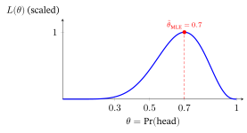
From MLE to training a model. Training a machine-learning model means choosing its parameters \(\theta\) (its weights) so that it fits the data it is trained on, and likelihood makes “fits” precise:
- The training data are fixed. \(L(\theta)\) is how probable the model, with weights \(\theta\), finds that data.
- Training searches for the \(\theta\) with the highest \(L\). In practice we minimize \(-\log L\) (next box): the log turns the product into a sum that is easy to differentiate, and the minus sign turns “make \(L\) large” into “make a loss small”, §3’s \(-\log p\) surprise used as a cost.
- For a model that predicts a label \(y\) from an input \(x\) — a spam filter reading an email \(x\) and answering spam or not \(y\) — the model gives each correct label a probability, and \(L(\theta)=\prod_{n=1}^{N}p(y_n\mid x_n,\theta)\): the probability it assigned to every correct answer in the training set. A language model trained to predict the next word is the same recipe, with the actual next word as the “label”.
Two refinements: with a prior on \(\theta\) the target changes (§5, §6), and not every training loss is a likelihood — a hinge (margin) loss (Loss Functions & Regularizers §2.2) just scores how wrong the model is. So the short version, for a likelihood loss and no prior, is: training maximizes the likelihood of the training labels given the inputs.
The bridge to losses. Define the negative log-likelihood (NLL) \(=-\log L(\theta)\). Then minimizing NLL = doing MLE (coin check: \(-\log L(0.7)=6.109\) and \(-\log L(0.6)=6.325\), so \(0.7\) has the lower NLL). And the loss rows of Loss Functions & Regularizers §6’s table are exactly this (its regularizer rows come from priors instead — §6 here). Two cases show the pattern:
- NLL of a Gaussian = squared error. The model’s prediction \(\hat y\) is the center of a bell curve for the target \(y\). \(-\log\) of the bell’s height at the true \(y\) is \((y-\hat y)^2/(2\sigma^2)\) plus a constant (§2; \(\sigma\) is held at the same fixed value for every data point, so that constant cannot change which \(\hat y\) fits best), so minimizing the NLL over the data is minimizing the MSE.
- NLL of a Bernoulli = binary cross-entropy. The target is \(0\) or \(1\) (a click or no click) and the model outputs \(p=\Pr(1)\). \(-\log\) of the probability it gave the actual outcome is \(-\log p\) if \(y=1\) and \(-\log(1-p)\) if \(y=0\). In one formula, for one labeled point \(y\in\{0,1\}\): \(-\log\!\big[p^{y}(1-p)^{1-y}\big]=-\big[y\log p+(1-y)\log(1-p)\big]\) — exactly binary cross-entropy.
Either way the loss is the model’s surprise (\(-\log\) probability, or \(-\log\) density for a continuous target, §3) at the truth, under a chosen noise shape. Most standard losses — MSE, MAE, BCE, cross-entropy — are negative log-likelihoods in disguise.
Takeaway: the likelihood scores each candidate \(\theta\) by how probable it makes the data; the \(\theta\) with the highest likelihood is the MLE, and taking \(-\log\) turns that search into minimizing a loss.
5. Bayes’ rule — prior, likelihood, evidence, posterior
A medical test comes back positive. The test catches \(99\%\) of the people who have the disease, so are you \(99\%\) likely to have it? It is tempting to say yes. For a disease that affects \(1\) person in \(100\), with a test that also flags \(5\) of every \(100\) healthy people, the answer is about \(17\%\). The missing ingredient is what was believed before the test (how rare the disease is), and this section builds the rule that combines that belief with the test result.
MLE uses the data only. Bayesian thinking adds a prior belief about \(\theta\) before seeing data (in the opener, the disease’s rate of \(1\) in \(100\): a prior of \(0.01\) that a person is sick), then updates it. The update is Bayes’ rule — after the Rev. Thomas Bayes, whose essay on it was published posthumously in 1763 — which falls straight out of the conditional-probability definition (§1); on the opener’s test it turns the prior \(0.01\) into a posterior of \(0.167\) (worked below).
Multiplying the conditional-probability definition through gives \(\Pr(A\cap B)=\Pr(A\mid B)\Pr(B)\), and the same with the roles swapped gives \(\Pr(A\cap B)=\Pr(B\mid A)\Pr(A)\). The two right-hand sides are equal, so dividing both by \(\Pr(B)\): \[\Pr(A\mid B)=\frac{\Pr(B\mid A)\,\Pr(A)}{\Pr(B)}.\]
Now let \(A\) be “the parameter has the value \(\theta\)” and \(B\) be “we observed the data \(D\)” — \(D\) is the whole dataset, such as the \(10\) coin flips of §4 (for a continuous \(\theta\) the same identity holds with densities in place of probabilities): \[ \underbrace{p(\theta\mid D)}_{\textbf{posterior}} \;=\; \frac{\overbrace{p(D\mid\theta)}^{\textbf{likelihood}}\;\overbrace{p(\theta)}^{\textbf{prior}}}{\underbrace{p(D)}_{\textbf{evidence}}} . \]
The four names — memorize these, they recur everywhere:
- Prior \(p(\theta)\) — what you believed about \(\theta\) before the data (Latin prior, “earlier”); in the test below, \(0.01\) sick and \(0.99\) healthy.
- Likelihood \(p(D\mid\theta)\) — how well \(\theta\) explains the data (the §4 object).
- Evidence \(p(D)=\sum_\theta p(D\mid\theta)p(\theta)\) — the divisor that makes the posterior add up to \(1\) over \(\theta\) (in the test below, the sick and healthy posteriors are \(0.0099/0.0594=0.167\) and \(0.0495/0.0594=0.833\), total \(1\); in §2’s terms the normalizing constant, the multiplier, is \(1/p(D)=16.8\)), from the law of total probability (§1): marginalize out \(\theta\) by averaging the likelihood over every \(\theta\), weighted by the prior. It is the data’s overall probability (a.k.a. the marginal likelihood), independent of \(\theta\) — which is why it drops out of MAP (maximum a posteriori estimation, §6). For a continuous \(\theta\), like a coin’s bias in \([0,1]\), the sum becomes an area, \(p(D)=\int p(D\mid\theta)\,p(\theta)\,d\theta\) — the same weighted average.
- Posterior \(p(\theta\mid D)\) — your updated belief after the data (Latin posterior, “later”).
In the test below, \(\theta\) is the person’s status (sick or healthy) and the data \(D\) is one positive result. For \(\theta=\) sick the four are: prior \(0.01\), likelihood \(0.99\), evidence \(0.0594\) (the healthy case’s likelihood, \(0.05\), enters through it), posterior \(0.167\).
In words: posterior ∝ likelihood × prior.
Are these all probabilities? Yes, with one catch. The prior and posterior are probability distributions over \(\theta\) — they are degrees of belief: \(p(\theta)\) says how plausible you find each value of \(\theta\) (for a continuous \(\theta\) such as a coin’s bias, a curve whose areas are probabilities), and “belief” only means that the probability measures your uncertainty (“I am \(17\%\) sure I am sick”) rather than a long-run frequency. The evidence \(p(D)\) is the probability of the data, averaged over every \(\theta\). The likelihood \(p(D\mid\theta)\) is a probability of the data for a fixed \(\theta\) — but, as §4 showed, as a function of \(\theta\) it is not a distribution (it need not sum to \(1\) over \(\theta\)).
Our running coin is the cleanest instance — the Bernoulli likelihood × a Beta prior gives a Beta posterior, worked end-to-end in §6. But first, the example everyone must meet, because it overturns a strong intuition:
Worked example — the famous medical test. Let \(S\) = “has the disease” (we write \(S\) for sick, since \(D\) already means data above). The disease affects 1% of people (\(\Pr(S)=0.01\), the prior). Write \(+\) for “the test comes back positive”. The test has 99% sensitivity — the chance it correctly flags a sick person, \(\Pr(+\mid S)=0.99\) — and a 5% false-positive rate — the chance it wrongly flags a healthy person, \(\Pr(+\mid\neg S)=0.05\), where \(\neg S\) (“not \(S\)”, §1’s complement) means healthy.
Both numbers describe the test, measured on people whose status is known (likelihoods, in this section’s language); the question we actually want answered runs the other way, from a positive result back to the person: \(\Pr(S\mid +)\).
You test positive. What is the probability you actually have the disease? Everyone is either sick or not, so \(\Pr(\neg S)=1-\Pr(S)=0.99\) — a coincidence that it matches the sensitivity’s \(0.99\). The law of total probability (§1), with the cases \(S\) and \(\neg S\), gives the evidence: \[ \begin{aligned} \Pr(+) &= \Pr(+\mid S)\Pr(S) + \Pr(+\mid\neg S)\Pr(\neg S)\\[4pt] &= 0.99(0.01) + 0.05(0.99) = 0.0099 + 0.0495 = 0.0594 . \end{aligned} \]
\[ \Pr(S\mid +) = \frac{\Pr(+\mid S)\Pr(S)}{\Pr(+)} = \frac{0.0099}{0.0594} \approx 0.167 . \]
The same thing by counting (often the clearest way): picture 10,000 people. The 1% prior makes 100 of them sick; the test catches 99 (true positives, TP for short). Of the 9,900 healthy, 5% — that is 495 — test positive anyway (false positives, FP). So 594 people test positive, yet only 99 of them are truly sick: \(99/594\approx 17\%\). That \(0.167\) is the posterior, \(\Pr(S\mid+)\): the prior \(0.01\) updated by a positive test result.
So the opener’s ~17% is right, despite a test that catches \(99\%\) of the sick. Because the disease is rare, most positives are false positives from the large healthy population. The base rate is how common the condition is in the population before anyone is tested — here \(1\%\) — and it is the prior; ignoring it is the classic mistake. This base-rate effect is the practical lesson of Bayes’ rule that the opener’s tempting \(99\%\) hides, and exactly why the prior matters.
| base rate (prior) | evidence \(\Pr(+)\) | posterior \(\Pr(S\mid+)\) | what a positive test means |
|---|---|---|---|
| rare: \(0.1\%\) | \(0.0509\) | \(1.9\%\) | almost every positive is false |
| the case above: \(1\%\) | \(0.0594\) | \(16.7\%\) | still mostly false |
| common: \(10\%\) | \(0.1440\) | \(68.8\%\) | now more likely true than not |
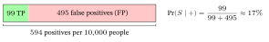
Frequentist vs Bayesian, in one line. A frequentist treats \(\theta\) as a fixed unknown and estimates it by the value that makes the observed data most probable (MLE: \(0.7\) for the coin). A Bayesian treats \(\theta\) as itself uncertain, carrying a prior, and computes a full posterior (from a Beta\((2,2)\) prior, the coin’s posterior is Beta\((9,5)\), peaked at \(0.667\); §2, §6). MAP (§6) is the bridge, and it is what training usually does with a posterior: it keeps only the peak, one value per parameter, and that is how a prior becomes a regularizer.
6. MLE vs MAP — how a prior becomes a regularizer
Seven heads in ten flips gave the estimate \(0.7\) in §4. Yet most coins are close to fair, and ten flips are few: would you really bet that this one lands heads \(70\%\) of the time? A sensible person pulls the guess a little toward \(0.5\). This section shows that the pull is a formula, and that the same kind of pull keeps a trained model’s settings from growing wild.
Maximum A Posteriori (MAP) estimation picks the peak of the posterior (§5): the \(\theta\) at the highest point of the posterior curve, the single most plausible value given the data and your prior (the height of a density is not a probability, §1; only where the peak sits matters here): \[ \hat\theta_{\text{MAP}} = \arg\max_\theta\, p(\theta\mid D) = \arg\max_\theta\, p(D\mid\theta)\,p(\theta) \]
(the evidence \(p(D)\) drops out — it does not depend on \(\theta\)). For the coin below, MLE gives \(0.700\) and MAP \(0.667\).
A posteriori is Latin for “from what comes after” (after the data), the mirror of a priori, “from before”. A priori reasons from what you already know to what to expect: “they have eaten nothing all day, so they must be hungry”. A posteriori reasons back from what you observe to its likely cause: “the streets are wet, so it must have rained”. The prior is your a priori belief, the posterior your a posteriori one.
Now take \(-\log\) of the product \(p(D\mid\theta)\,p(\theta)\). Three things happen — two already familiar from §4: the product becomes a sum (\(\log ab=\log a+\log b\)), and the maximizer is unmoved (\(\log\) is increasing). The third is new: the minus sign flips \(\arg\max\) into \(\arg\min\) (negating sends the largest value to the most negative — i.e. the smallest), turning each log-probability into a cost, larger the less likely its argument (§2’s three values: \(0\), \(0.105\), \(2.303\) at \(1\), \(0.9\), \(0.1\)).
For a probability the cost is never negative, since a probability is at most \(1\); a density can exceed \(1\), so its cost can be negative (the coin’s Beta\((2,2)\) prior below peaks at a height of \(1.5\), a cost of \(-\ln 1.5=-0.41\)). The sign does not matter: minimizing compares costs across values of \(\theta\), and a constant added to every cost moves no minimum. The first cost is the negative log-likelihood (NLL) of §4: \[ \hat\theta_{\text{MAP}} = \arg\min_\theta\Big[\underbrace{-\log p(D\mid\theta)}_{\text{NLL} = \textbf{loss}} \;+\; \underbrace{-\log p(\theta)}_{\textbf{regularizer}}\Big]. \]
This is the whole bridge to Loss Functions & Regularizers. MLE = “loss only.” MAP = “loss + a term from the prior.” That second term is the regularizer — so named because it keeps the solution regular (well-behaved), reining in extreme parameter values. A real model has many parameters, called weights; collect them in one list \(\boldsymbol\theta=[\theta_1,\dots,\theta_d]\) (from here on, a \(\theta\) inside a regularizer formula stands for the whole list: bold, \(\boldsymbol\theta\), where this chapter writes the list out, though other chapters may print the plain \(\theta\) for it, so read the context as well as the typeface). Three priors: two give a regularizer, and the flat one gives none:
- A Gaussian prior: believe each weight is small, near \(0\), by giving it a Gaussian with mean \(0\) and a variance \(s^2\) you choose, \(p(\theta_j)\propto\exp\!\big(-\theta_j^2/(2s^2)\big)\). Each weight gets its own prior, independently of the others, so their priors multiply (§1: independent chances multiply) and their \(-\log\)s add; and by §2’s Gaussian \(-\log\) (with \(\theta_j\) in place of \(x\), \(0\) in place of \(\mu\) and \(s\) in place of \(\sigma\)) each is \(\theta_j^2/(2s^2)\) plus a constant: \[-\log p(\boldsymbol\theta)=\frac{\theta_1^2+\dots+\theta_d^2}{2s^2}+\text{const}=\frac{\lVert\boldsymbol\theta\rVert_2^2}{2s^2}+\text{const},\] where \(\lVert\boldsymbol\theta\rVert_2^2\) — read “the squared L2 norm of \(\boldsymbol\theta\)” — is the sum of the squared weights (\(9+16=25\) for \([3,-4]\); its square root \(\lVert\boldsymbol\theta\rVert_2\) is the ordinary length of the list viewed as a vector; Linear-Algebra primer).
- A Laplace prior: believe each weight is near \(0\) but allow a few large ones, by giving it a Laplace centered at \(0\) with scale \(b\), \(p(\theta_j)\propto\exp\!\big(-\lvert\theta_j\rvert/b\big)\); the same derivation gives \(-\log p(\boldsymbol\theta)=\frac{\lvert\theta_1\rvert+\dots+\lvert\theta_d\rvert}{b}+\text{const}=\frac{\lVert\boldsymbol\theta\rVert_1}{b}+\text{const}\), where \(\lVert\boldsymbol\theta\rVert_1\) (the L1 norm) is the sum of the absolute values (\(3+4=7\) for \([3,-4]\)).
- A flat (uninformative) prior: believe no value more than another; the regularizer is then constant, so MAP collapses to MLE. For a coin’s bias, flat is \(\text{Beta}(1,1)\), whose posterior mode after \(7\) heads in \(10\) is \((1+7-1)/(2+10-2)=0.700\), exactly the MLE (over an unbounded range a flat prior is only a limit of ever wider priors).
The two penalties’ names, with one step of each. Adding the Gaussian prior’s penalty to the loss is L2 regularization, also called weight decay: under gradient descent it shrinks every weight a little toward \(0\) at each step, so the weights “decay”. With \(s=1\), a step size of \(0.1\) (how far each step moves) and the data term set aside, a weight of \(3\) feels the slope \(3\) and moves to \(3-0.1\times3=2.7\).
Adding the Laplace prior’s penalty is L1 regularization, known as the lasso when used with linear regression (fitting a straight-line model to data). With \(b=1\) its slope is \(1/b=1\) for every positive weight, so the same step size moves a weight of \(3\) to \(2.9\) and a weight of \(0.3\) to \(0.2\): the same pull whatever the size (under L2 the \(0.3\) would move only to \(0.27\)). That constant pull is what lets the optimizer (the routine that adjusts the weights) set small weights to exactly \(0\), with a proximal or clipped step (one that stops at zero instead of crossing it) (Loss Functions & Regularizers §5.1): a weight of \(0.05\) would step to \(0.05-0.1=-0.05\), past zero, so the optimizer stops it at exactly \(0\), where L2 would only move it to \(0.045\).
Why it shrinks, and how strongly. The L2 penalty’s slope in \(\theta_j\) is \(\theta_j/s^2\), proportional to the weight, so each gradient step (§3) pulls the bigger weights harder toward \(0\). With \(s=1\) and a step size of \(0.1\), the penalty alone takes \(0.3\) from a weight of \(3\), \(0.03\) from one of \(0.3\) and \(0.005\) from one of \(0.05\): the pull is the weight over \(s^2\), a straight line through \(0\), so three weights show it. A narrower prior (smaller \(s\), smaller \(b\)) is a stronger penalty.
Write the penalty as \(\lambda\times\lVert\boldsymbol\theta\rVert_2^2\) (L2) or \(\lambda\times\lVert\boldsymbol\theta\rVert_1\) (L1). Added to the summed NLL, \(\lambda=1/(2s^2)\) for L2 and \(1/b\) for L1 (so \(s=2,\,1,\,0.5\) give \(\lambda=0.125,\,0.5,\,2\)). Each halving of \(s\) makes \(\lambda\) four times larger, so three widths show the trend. Other books and libraries add it to a rescaled loss, and then the number called \(\lambda\) changes while the minimizing \(\theta\) does not: multiplying a whole objective by a positive constant moves no minimum.
With the Gaussian noise of spread \(\sigma\) from §2, the data part of the NLL is the summed squared error divided by \(2\sigma^2\), so for L2 with \(s=2\), \(\sigma=1\) and \(N=100\) points:
| the penalty is added to | multiply the summed NLL by | then \(\lambda\) is | here |
|---|---|---|---|
| the summed NLL | \(1\) | \(1/(2s^2)\) | \(0.125\) |
| the summed squared error (Loss Functions & Regularizers §6) | \(2\sigma^2\) | \(\sigma^2/s^2\) | \(0.25\) |
| the mean squared error (the average over the \(N\) points) | \(2\sigma^2/N\) | \(\sigma^2/(Ns^2)\) | \(0.0025\) |
“Loss \(+\,\lambda\times\) penalty”, with \(\lambda\) chosen, is how Loss Functions & Regularizers writes the same thing.
Worked numbers: for the weights \(\boldsymbol\theta=[3,-4]\), \(\lVert\boldsymbol\theta\rVert_2^2=9+16=25\) and \(\lVert\boldsymbol\theta\rVert_1=3+4=7\) — so with \(s=1\) the Gaussian prior charges \(25/2=12.5\), and with \(b=1\) the Laplace prior charges \(7\) (each plus its constant). The pulls differ in kind: the L2 slope is the weight itself, \(3\) and \(-4\), so the larger weight is pulled harder; the L1 slope is \(\pm1\), the same pull on both. Note the \(+\text{const}\): the prior’s hidden constant multiplier \(c\) (the \(\propto\) in \(p(\theta_j)\propto\dots\)) becomes, under \(-\log\), an added constant, since \(-\log(c\,f)=-\log c-\log f\) — which is why these lines say “\(=\dots+\text{const}\)” rather than “\(\propto\)”.
Worked example — the coin again, now Bayesian. We saw 7 heads in 10 (§4 gave MLE \(=0.7\)). Add a Beta\((2,2)\) prior — a gentle belief that the coin is fairish (prior mean \(0.5\)). Since Beta is conjugate to Bernoulli, the posterior is just “add the counts to the prior exponents”: \[ p(\theta\mid D) \propto \underbrace{\theta^{7}(1-\theta)^{3}}_{\text{likelihood}}\cdot\underbrace{\theta^{1}(1-\theta)^{1}}_{\text{Beta}(2,2)\ \text{prior}} = \theta^{8}(1-\theta)^{4} \;\propto\; \text{Beta}(9,5). \]
The MAP estimate is the mode of Beta\((9,5)\) — the \(\theta\) where the posterior peaks. Find it exactly as §4 found the MLE: maximize \(\log\big[\theta^{8}(1-\theta)^{4}\big]=8\ln\theta+4\ln(1-\theta)\); its slope \(\frac{8}{\theta}-\frac{4}{1-\theta}=0\) gives \(8(1-\theta)=4\theta\), so \(\theta=\frac{8}{12}=0.667\).
The same steps give the general mode quoted in §2, for any Beta\((\alpha,\beta)\) with \(\alpha,\beta>1\), so that the curve peaks inside \((0,1)\): maximize \(\log\big[\theta^{\alpha-1}(1-\theta)^{\beta-1}\big]=(\alpha-1)\ln\theta+(\beta-1)\ln(1-\theta)\); its slope \(\frac{\alpha-1}{\theta}-\frac{\beta-1}{1-\theta}=0\) gives \((\alpha-1)(1-\theta)=(\beta-1)\theta\), so \(\alpha-1=(\alpha+\beta-2)\,\theta\) and \(\theta=\frac{\alpha-1}{\alpha+\beta-2}\) — here \(\frac{9-1}{9+5-2}=\frac{8}{12}\) ✓.
The three estimates side by side:
| Estimate | Value | Reading |
|---|---|---|
| MLE | \(0.700\) | trust the data alone |
| Prior mean | \(0.500\) | belief before data |
| MAP | \(0.667\) | data, pulled toward the prior |
The figure below compares where the likelihood, the prior and the posterior peak, each scaled to a peak of \(1\).
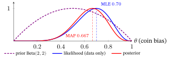
The prior shrinks the estimate from \(0.7\) toward \(0.5\) — the same kind of pull toward a center that L2 applies when it shrinks weights toward \(0\). With more data the likelihood dominates and MAP moves back toward the MLE: \(70\) heads in \(100\) flips with the same Beta\((2,2)\) prior give the posterior Beta\((72,32)\), whose mode is \(\frac{71}{102}\approx0.696\) — almost the MLE \(0.7\). A prior is a finite nudge, washed out by enough evidence. How strong a nudge depends on the prior’s pseudo-counts (§2: Beta\((\alpha,\beta)\) acts as if you had already seen \(\alpha-1\) heads and \(\beta-1\) tails; same \(7\) heads in \(10\)):
| prior | posterior | MAP | what it means |
|---|---|---|---|
| flat: Beta\((1,1)\) | Beta\((8,4)\) | \(0.700\) | no pull: the MLE |
| gentle: Beta\((2,2)\) | Beta\((9,5)\) | \(0.667\) | the worked example above |
| firm: Beta\((10,10)\) | Beta\((17,13)\) | \(0.571\) | most of the way to \(0.5\) |
| stubborn: Beta\((50,50)\) | Beta\((57,53)\) | \(0.519\) | ten flips barely move it |
The next figure shows the prior and the posterior at their true heights: the update sharpens the curve and shifts it.
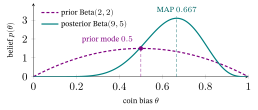
One-line takeaway. MLE maximizes likelihood; MAP maximizes likelihood × prior; under \(-\log\) that is exactly loss + regularizer. Loss Functions & Regularizers §6 is this section applied to model parameters, and §9’s Bayesian Personalized Ranking (BPR) is this section with a Gaussian prior giving its L2 term.
7. Entropy, cross-entropy, Kullback–Leibler (KL) divergence and mutual information
A forecaster in the desert says “sun, \(95\%\)” every day and is almost never surprised. Say the same in a city where it rains every other day and the forecaster is caught out half the time. How surprised a model is by what actually happens is a number, and it is the number a classifier (a model that sorts examples into labelled classes) is usually trained to make small. This section measures surprise, averages it, and compares a forecast with the truth by it.
Four information-theory quantities — entropy, cross-entropy, the KL divergence and mutual information — are the backbone of much of modern ML; one of them, cross-entropy, is the standard classification loss. All four grow from one idea from §3: surprise \(=-\log p\). A result you were sure of (\(p\approx1\)) carries almost no surprise (\(-\log p\approx0\)); a result you thought nearly impossible (\(p\approx0\)) is a huge shock (\(-\log p\) is huge). Everything below just averages surprises (or, for KL, differences of surprises), one way or another. (Not every classification loss is built from them. The hinge loss \(\max(0,\,1-y\hat y)\) of Loss Functions & Regularizers §2.2 is not: with the labels coded \(+1\) and \(-1\), for \(y=+1\) a score \(\hat y=2\) costs \(0\) and a score \(0.5\) costs \(0.5\), and no probability appears anywhere.)
Five everyday words, one idea. Likely, surprise, predictable, uncertain and loss are one idea, surprise, seen from five sides: a probability, its surprise, and averages of surprise. Here they are on the opener’s desert forecast: sun with probability \(0.95\), rain with probability \(0.05\). We count in bits (\(\log_2\)) for now; the Units box below explains nats, the unit the loss formulas use.
| Word | What it means here | In the desert forecast |
|---|---|---|
| likely / unlikely | the probability \(p\) of an outcome | sun is likely (\(0.95\)); rain is unlikely (\(0.05\)) |
| surprise | \(-\log p\): small for a likely outcome, large for an unlikely one | sun: \(0.074\) bits; rain: \(4.32\) bits, nearly \(60\) times more |
| predictable | one outcome is so likely that you can call it in advance | say “sun” every day and you are right \(95\%\) of the time |
| uncertain | the average surprise over all outcomes, called the entropy; low when predictable | \(0.95\times0.074+0.05\times4.32=0.29\) bits: low, because the big surprise is rare |
| loss | how surprised a model is by what really happened: the surprise it gave the true answer | a forecaster who instead gave rain only \(q=0.01\) is hit by \(6.6\) bits when it rains (\(=4.6\) nats; from Cross-entropy on, losses are in nats, see Units) |
Read it as one chain. The more likely an outcome, the smaller its surprise. A situation in which one outcome is very likely is predictable, so its average surprise (its uncertainty) is small. A model’s loss is the surprise it felt at the truth, so it is small exactly when the model had called the truth likely. (Bits are explained below, in What the number of bits means: for now read one bit as one yes/no question; a fraction of a bit, like \(0.074\) — the surprise of one sunny day at \(0.95\) — is not a number of questions for a single outcome: it makes sense as a cost spread over many outcomes.)
Entropy — average surprise
The entropy of a distribution \(p\) is the average surprise of its outcomes: \[ H(p) = -\sum_x p(x)\,\log_2 p(x) = \mathbb{E}_{x\sim p}\big[-\log_2 p(x)\big]\quad\text{(in bits; with }\ln\text{, in nats)}. \]
Component by component: \(-\log_2 p(x)\) is the surprise of outcome \(x\) and \(p(x)\) is how often it occurs, so the sum is a probability-weighted average of surprise — exactly the \(\mathbb{E}_{x\sim p}[-\log_2 p(x)]\) on the right. (The subscript \(x\sim p\) reads “\(x\) drawn from \(p\)”, so \(\mathbb{E}_{x\sim p}[\cdot]\) is the average over the outcomes that \(p\) produces, each weighted by how often \(p\) produces it — §1’s expectation.) Entropy measures uncertainty: how unpredictable \(p\) is.
Low and high uncertainty, by example. The more evenly the probability is spread, the harder the outcome is to guess, and the higher the entropy:
| Situation | Probabilities | Best guess is right | Entropy |
|---|---|---|---|
| A two-headed coin | \([1,\,0]\) | \(100\%\) | \(0\) bits: nothing to guess |
| Desert weather (sun / rain) | \([0.95,\,0.05]\) | \(95\%\) | \(0.29\) bits: low |
| A biased coin | \([0.9,\,0.1]\) | \(90\%\) | \(0.47\) bits: low |
| A fair coin | \([0.5,\,0.5]\) | \(50\%\) | \(1\) bit: high for two outcomes |
| A fair six-sided die | six times \(\tfrac16\) | \(17\%\) | \(2.58\) bits: higher, because there are more outcomes |
With \(K\) equally likely outcomes the entropy is \(\log_2K\), the largest value possible for \(K\) outcomes (the die: \(\log_2 6=2.58\); a loaded die with one face \(0.5\) and five faces \(0.1\) has only \(2.16\) bits). A fractional number is an average over many outcomes: \(0.29\) bits for the desert forecast means, at best, about \(29\) questions to name \(100\) days of weather, by coding long blocks of days together (see Why not just count questions? below).
What the number of bits means. With \(\log_2\), entropy counts yes/no questions, as in the party game “20 questions”: it is the average number of questions needed to name the outcome exactly when every probability is \(\tfrac12,\tfrac14,\tfrac18,\dots\) (as in the figure below), and otherwise the floor that the average approaches when many outcomes are named together (see Why not just count questions?). Equivalently it is the average length of a message, in bits (\(0\)s and \(1\)s), that tells someone the outcome. Few bits: the outcome is nearly known. Many bits: you must ask a lot.
- \(0\) bits: nothing to ask, you already know (“the sun rises”).
- \(1\) bit: one question, e.g. a fair coin: “heads?”
- \(2\) bits: two questions, e.g. four equally likely outcomes.
- \(n\) bits: \(n\) questions can single out one of \(2^n\) equally likely things (\(20\) questions: about a million).
- A lopsided case with probabilities \(\tfrac12,\tfrac14,\tfrac18,\tfrac18\) (the questions figure below): ask about the likeliest first, so the average is \(1.75\) questions, and its entropy is exactly \(1.75\) bits. Each outcome costs exactly \(-\log_2p\) questions (A: \(1\), B: \(2\), C and D: \(3\)), which is its surprise in bits.
Low entropy therefore means short messages. Give the common outcome a short code and the rare ones longer codes (A=0, B=10, C=110, D=111) and the average message is \(\tfrac12\cdot1+\tfrac14\cdot2+\tfrac18\cdot3+\tfrac18\cdot3=1.75\) bits, instead of \(2\) bits with equal-length codes.
Why not just count questions? The count and the entropy agree exactly when every probability is a power of \(\tfrac12\), as in the cases above. Otherwise entropy is the floor the count approaches when you encode many samples at once. A coin with heads-probability \(0.9\) is the example: one flip still costs one whole question, but its entropy is only \(0.47\) bits, because a long run of such flips is so predictable that about \(1000\times0.47\approx470\) questions identify all \(1000\) of them. You can see it already with pairs of flips: code two heads (probability \(0.81\)) as 0, a head then a tail and a tail then a head (\(0.09\) each) as 10 and 110, two tails (\(0.01\)) as 111, and the average is \(0.81\cdot1+0.09\cdot2+0.09\cdot3+0.01\cdot3=1.29\) questions per pair, \(0.645\) per flip; longer blocks approach \(0.47\).
Three flips at a time. Give three heads (probability \(0.729\)) the code 1; the three blocks with two heads and a tail (\(0.081\) each) the codes 001, 010, 011; and the four blocks with two or more tails (\(0.009\) each for three of them, \(0.001\) for three tails) five-bit codes 00000, 00001, 00010 and 00011. No code begins another, and the average is \(0.729\cdot1+3\cdot0.081\cdot3+3\cdot0.009\cdot5+0.001\cdot5=1.598\) bits per block, \(0.53\) per flip: already close to \(0.47\). No code can average fewer than \(0.47\) bits per flip, so the costs of three block lengths, \(1\), \(0.645\) and \(0.53\) bits per flip, already cover most of the distance from \(1\) down to that floor and show where the cost heads.
Reading the figure below. Each circle is a yes/no question. In the left tree, question 1 asks “A or B?” and question 2 asks “A?” on the yes-road or “C?” on the no-road: three circles on the page, but every road uses only two. In the right tree you ask “A?”, then “B?”, then “C?”, stopping as soon as you have the answer.
For a coin whose heads-probability is \(\theta\) (any coin; not the §4 coin), the distribution is the list \(p=[\theta,\,1-\theta]\), so its entropy is \(H(p)=-\theta\log_2\theta-(1-\theta)\log_2(1-\theta)\), the binary entropy, plotted in the figure below. (The coin’s bias is called \(\theta\), as in §4, because \(p\) is busy naming the whole distribution.)
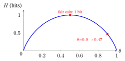
- Fair coin (\(\theta=0.5\)): \(H=-0.5\log_2 0.5-0.5\log_2 0.5=1\) bit — maximal uncertainty for two outcomes.
- Biased coin (\(\theta=0.9\)): \(H=-0.9\log_2 0.9-0.1\log_2 0.1=0.47\) bits — more predictable, so less average surprise.
- Certain (\(\theta=1\)): \(H=-1\cdot\log_2 1-0\cdot\log_2 0=0\), using the convention \(0\cdot\log 0=0\) — an outcome that never happens adds nothing to the average. (\(\log 0\) itself does not exist, but \(\theta\log_2\theta\) shrinks to \(0\) along with \(\theta\): \(0.001\log_2 0.001\approx-0.00997\).)
Units (bits vs nats). The base of the logarithm is only a unit. \(\log_2\) gives bits (the yes/no questions above). The natural logarithm \(\ln\) (base \(e\approx2.718\)) gives nats, which the loss formulas in the rest of this chapter use. The two differ by the fixed factor \(\ln 2\approx0.693\), the power to which \(e\) must be raised to get \(2\) (\(e^{0.693}\approx2\)). Why that number: the fair coin has entropy \(\log_2 2=1\) bit, and with \(\ln\) the same formula gives \(-\tfrac12\ln\tfrac12-\tfrac12\ln\tfrac12=\ln2=0.693\) nats, so \(1\) bit \(=0.693\) nats. To convert bits to nats multiply by \(0.693\) (the biased coin: \(0.47\) bits \(\approx0.325\) nats); to convert nats to bits divide by \(0.693\). The conversion holds for every distribution, because changing the base is one fixed rescaling: \(\log_2x=\ln x/\ln2\).
Why “entropy.” Borrowed from thermodynamics (en- + Greek tropē, “transformation”), where it measures disorder. Claude Shannon (1948) showed the same formula measures the uncertainty of an information source. It is maximal at the uniform distribution (the die: \(2.58\) bits for equal faces against \(2.16\) for the loaded die) and zero when one outcome is certain.
Cross-entropy — surprise under the wrong distribution
Cross-entropy is the average surprise when reality follows \(p\) but you predict with a different distribution \(q\).
A classifier, concretely. Show a photo to a classifier that chooses among {cat, dog, bird}. Its softmax output (§3: the softmax of the classifier’s scores) is a distribution \(q\) over the three classes, say \(q=[0.7,0.2,0.1]\): “\(70\%\) cat”. The photo’s label says cat, so the truth is the one-hot distribution \(p=[1,0,0]\) (the right class has probability \(1\), the rest \(0\)). Cross-entropy is
\[ H(p,q) = -\sum_x p(x)\,\log q(x). \]
Watch the sum collapse for \(p=[1,0,0]\): \[ H(p,q)=-\big(1\cdot\log q_{\text{cat}}+0\cdot\log q_{\text{dog}}+0\cdot\log q_{\text{bird}}\big)=-\log q_{\text{cat}}. \] The two \(0\)s delete their terms, leaving \(H(p,q)=-\log q(\text{true class})\) — the model’s surprise at the correct answer. That is the cross-entropy loss, and (since the one-hot likelihood is just \(q(\text{true class})\)) exactly the NLL of §4 (for \(q_{\text{cat}}=0.7\) both are \(-\ln0.7=0.357\)).
In plain words: the label reveals the true class, and the loss is how surprised the classifier is to learn it. A classifier that had said “cat, \(98\%\)” is hardly surprised; one that had said “cat, \(1\%\)” is shocked. So the loss measures how far \(q\) agrees or disagrees with the truth \(p\): agreeing gives a small loss, disagreeing a large one. Here are three classifiers shown the same cat photo (loss in nats, \(-\ln q_{\text{cat}}\)):
| The classifier says \(q=[\text{cat},\text{dog},\text{bird}]\) | \(q_{\text{cat}}\) | Loss | The slope \(q-p\) (training moves each score the opposite way) |
|---|---|---|---|
| Agrees: \([0.98,\,0.01,\,0.01]\) | near \(1\) | \(0.020\) | \([-0.02,\,+0.01,\,+0.01]\): a tiny nudge; almost nothing to fix |
| Unsure: \([0.50,\,0.25,\,0.25]\) | \(0.5\) | \(0.693\) | \([-0.50,\,+0.25,\,+0.25]\): a firm nudge |
| Disagrees: \([0.01,\,0.49,\,0.50]\) | near \(0\) | \(4.605\) | \([-0.99,\,+0.49,\,+0.50]\): a hard shove |
The last column is the loss’s slope with respect to each class’s score (for softmax followed by cross-entropy it is exactly \(q-p\): a result this chapter takes as given rather than derives, which follows from the toolkit’s chain rule and the slopes of \(\ln x\) and \(e^{x}\) given in Calculus primer §2; the check below tests it with a number). A gradient step (§3) moves each score against its slope, so a negative entry raises that class’s score (here, cat) and a positive entry lowers it; the entry’s size says how hard.
Check on the Unsure row, whose scores can be taken as \([\ln2,0,0]=[0.693,0,0]\) (softmax gives \([0.50,0.25,0.25]\)): raising the cat score by \(0.1\) gives \(q_{\text{cat}}=e^{0.1}/(e^{0.1}+1)=0.525\) and lowers the loss from \(0.693\) to \(-\ln0.525=0.644\), a drop of \(0.049\), about the slope \(0.5\) times \(0.1\); for the dog entry (\(+0.25\)), raising the dog score by \(0.1\) raises the loss by \(0.026\). An agreeing classifier is left almost alone, and a confidently wrong one is corrected the hardest.
A whole dataset. Training minimizes the average loss over all examples. Four photos on which the classifier gave the true class \(q=0.98,\ 0.5,\ 0.99,\ 0.01\) have losses \(0.020,\ 0.693,\ 0.010,\ 4.605\), an average of \(1.33\). The one confident mistake supplies \(86\%\) of the total, and it gets the biggest correction (\(-0.99\) in the last column, against \(-0.02\) for the \(q=0.98\) photo). Perfect agreement (\(q_{\text{cat}}=1\)) costs \(0\); as \(q_{\text{cat}}\to0\) the loss grows without bound (softmax never outputs exactly \(0\) or \(1\) — for the scores \([2,1,0]\) of §3 the smallest output is \(0.09\) — which is why the table uses \(0.01\) and \(0.98\)).
Why a loss and not accuracy. Accuracy only asks whether cat is the top class. Nudge the Disagrees photo to \([0.20,\,0.40,\,0.40]\) and it is still wrong, so its accuracy has not changed, yet its loss has fallen from \(4.605\) to \(1.609\): the loss sees progress that accuracy cannot.
Why “cross”-entropy. You cross the true distribution \(p\) with a different model distribution \(q\) — scoring \(p\)’s outcomes by \(q\)’s probabilities. When \(q=p\) it collapses to the ordinary entropy \(H(p)\) (a model that is exactly right about a fair coin, \(q=p=[0.5,0.5]\), has \(H(p,q)=H(p)=0.693\) nats).
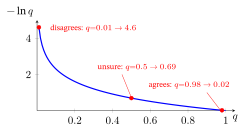
KL divergence — the gap between two distributions
The Kullback–Leibler (KL) divergence is the extra surprise from using \(q\) instead of the true \(p\) — cross-entropy minus entropy: \[ D_{\mathrm{KL}}(p\,\Vert\,q)=\sum_x p(x)\log\frac{p(x)}{q(x)} = \underbrace{H(p,q)}_{\text{cross-entropy}}-\underbrace{H(p)}_{\text{entropy}} \;\ge\; 0. \]
Read \(D_{\mathrm{KL}}(p\,\Vert\,q)\) as “the KL divergence of \(q\) from \(p\)”: the double bar \(\Vert\) just separates the two distributions, and the order matters — the truth \(p\) comes first (the tables after the worked example show why). The middle equality is one log rule and a regrouping: from the toolkit’s rules, \(\log\frac{a}{b}=\log a+\log\frac1b=\log a-\log b\), so \(\sum_x p(x)\log\frac{p(x)}{q(x)}=\sum_x p(x)\log p(x)-\sum_x p(x)\log q(x)=-H(p)+H(p,q)\).
It is \(0\) exactly when \(q=p\) and grows as \(q\) drifts away — a one-directional “how far is \(q\) from the truth.” For \(p=[0.5,0.5]\): \(q=p\) gives \(0\) (every ratio is \(1\) and \(\ln1=0\)), \(q=[0.8,0.2]\) gives \(0.223\) nats, and \(q=[0.9,0.1]\), further away, gives \(0.511\) nats. Here \(q\) has one free number, and the divergence only rises as it moves from \(0.5\) toward \(1\), so three values show the climb.
Why KL can never be negative
Use \(\ln x\le x-1\): the curve \(\ln x\) never rises above its tangent line \(x-1\), the straight line that touches it only at \(x=1\), with the same slope there. Three checks: \(\ln0.5=-0.693\le-0.5\), \(\ln1=0\le0\) (the touching point) and \(\ln2=0.693\le1\). Why the curve stays below the line: the slope of \(\ln x\), \(1/x\), is steeper than the line’s \(1\) left of \(x=1\) and flatter right of it, so the curve falls away below the line on both sides. Then \[ -D_{\mathrm{KL}}(p\,\Vert\,q)=\sum_x p(x)\ln\frac{q(x)}{p(x)}\;\le\;\sum_x p(x)\Big(\frac{q(x)}{p(x)}-1\Big)=\sum_x q(x)-\sum_x p(x)\le 1-1=0, \] with equality only when \(q=p\). (The sums run over the outcomes with \(p(x)>0\), where \(\sum_x q(x)\le1\); and \(q\) must give each of them some probability, or the divergence is infinite.) (Individual terms can be negative — see \(-0.294\) below — but their sum cannot.)
Worked example
Truth \(p=[0.5,0.5]\), model \(q=[0.9,0.1]\) (all in nats):
- Directly: \(D_{\mathrm{KL}}=0.5\ln\tfrac{0.5}{0.9}+0.5\ln\tfrac{0.5}{0.1}=-0.294+0.805=0.511\).
- As cross-entropy minus entropy: \(H(p,q)=-0.5\ln 0.9-0.5\ln 0.1=0.053+1.151=1.204\) and \(H(p)=0.693\) — the fair coin’s \(1\) bit, in nats — so \(H(p,q)-H(p)=1.204-0.693=0.511\) ✓.
Why is there an extra \(0.511\)? The model expects heads \(90\%\) of the time, so heads barely surprises it (\(-\ln0.9=0.105\)) but tails shocks it (\(-\ln0.1=2.303\)). The truth gives tails half the time, so its average surprise is \(0.5\times0.105+0.5\times2.303=1.204\), against the \(0.693\) it would feel if its \(q\) matched the truth (\(q=p=[0.5,0.5]\)). The difference, \(0.511\), is the price of believing the wrong \(q\). The opener’s city forecaster (\(q=[0.95,0.05]\) against a truth of \([0.5,0.5]\)) pays more: a cross-entropy of \(1.52\) nats, \(0.83\) above the \(0.693\) floor, against \(0.199\) nats (\(0.29\) bits) for the same forecast in the desert, where it is the truth. The figure below draws the coin’s gap: the floor \(0.693\) plus the red \(0.511\) make the cross-entropy \(1.204\).
Why “divergence” and not “distance”
The name honours Solomon Kullback and Richard Leibler (1951). A true distance is never negative and is zero only for identical objects (KL has both), and it must also have two more properties, which KL lacks:
| A distance must… | KL divergence | Numbers (nats) |
|---|---|---|
| be the same both ways, \(d(A,B)=d(B,A)\) | not symmetric: \(D_{\mathrm{KL}}(p\Vert q)\neq D_{\mathrm{KL}}(q\Vert p)\) | \(p=[0.5,0.5]\), \(q=[0.9,0.1]\): \(0.511\) one way, \(0.368\) the other |
| obey the triangle inequality: going from A to C directly is never longer than going via B | can break it | \(P=[0.5,0.5]\), \(Q=[0.75,0.25]\), \(R=[0.99,0.01]\): direct \(D_{\mathrm{KL}}(P\Vert R)=1.614\), but via \(Q\) only \(0.144+0.596=0.740\) |
Why the order matters, for a classifier
For a one-hot label, \(D_{\mathrm{KL}}(p\Vert q)\) is just the cross-entropy loss \(-\ln q_{\text{cat}}\) (a one-hot \(p\) has entropy \(0\), like the two-headed coin, so KL \(=H(p,q)-0\)), which grows without limit as \(q_{\text{cat}}\to0\) (the cross-entropy figure above). In general \(D_{\mathrm{KL}}(p\Vert q)\) weights each extra surprise, \(\ln\frac{p(x)}{q(x)}\), by how often the truth \(p\) produces that outcome, so a model that calls an outcome nearly impossible (\(q\approx0\)) when it really happens is punished without limit. Take \(p=[0.5,0.5]\) and a model that gives the second outcome probability \(q_2\):
| \(q_2\) (divergences in nats) | \(0.01\) | \(10^{-4}\) | \(10^{-8}\) |
|---|---|---|---|
| \(D_{\mathrm{KL}}(p\Vert q)\), weighted by the truth | \(1.614\) | \(3.912\) | \(8.517\) |
| \(D_{\mathrm{KL}}(q\Vert p)\), weighted by the model | \(0.637\) | \(0.692\) | \(0.693\) |
The first row grows without bound, because the term \(0.5\ln\frac{0.5}{q_2}\) does; the second levels off near \(\ln2\): as \(q_2\to0\) its first term tends to \(1\cdot\ln2\) and its second, \(q_2\ln(2q_2)\), shrinks to \(0\). Those two limits say where each row heads, so three values of \(q_2\), each far smaller than the last, are enough to show one row leaving and the other settling.
With the model first, ignoring an outcome the truth produces half the time costs at most \(0.693\) nats in this table, so a model trained that way feels little pressure to keep that outcome (what the variational methods named below are reported to do; a claim from practice, not tested here). So the order is part of the definition, and training a classifier uses the first row’s order: it must never give probability \(0\) to a class that can happen. Some uses (variational autoencoders, networks that generate new data; tuning a language model on human feedback; variational inference, which approximates a hard posterior) put the model first, \(D_{\mathrm{KL}}(q\Vert p)\); the table in Where they power modern machine learning below says which.
The punchline that unites them
Since \(H(p)\) is fixed by the data, \(\min_q H(p,q)\Leftrightarrow\min_q D_{\mathrm{KL}}(p\Vert q)\) — read \(\min_q\) as “make as small as possible by choosing \(q\)” and \(\Leftrightarrow\) as “is equivalent to”: the two differ only by the constant \(H(p)\), so the \(q\) that minimizes one minimizes the other. Training a classifier by minimizing cross-entropy is pulling the model’s \(q\) toward the true \(p\) in KL. Check on \(p=[0.5,0.5]\) (nats): \(q=[0.9,0.1]\) has \(H(p,q)=1.204\) and \(D_{\mathrm{KL}}=0.511\); the better \(q=[0.8,0.2]\) has \(0.916\) and \(0.223\); both numbers fall together, always \(0.693\) apart. (For a one-hot label \(H(p)=0\), so there cross-entropy and KL are not merely equivalent but equal: for \(q_{\text{cat}}=0.7\) both are \(0.357\).)
Where they power modern machine learning
| Quantity | Used for |
|---|---|
| Cross-entropy | the default classification loss in most classifiers (softmax + cross-entropy) = NLL (§4); numbers in the cat table above |
| KL divergence | variational autoencoders (VAEs) — networks that learn to generate new data; their training objective, the evidence lower bound (ELBO) (a number that can never exceed the log of §5’s evidence, so raising it raises a guaranteed floor), contains a KL term that keeps the network’s distribution over the code (the short list of numbers that summarizes each example) close to a prior (§5); numbers below the table |
| KL divergence | knowledge distillation — training a small model to match a large model’s output probabilities (the KL measures the mismatch: teacher \([0.7,0.2,0.1]\) against student \([0.5,0.3,0.2]\) is \(0.085\) nats; more below the table) |
| KL divergence | reinforcement learning from human feedback (RLHF) — tuning a language model toward the answers people prefer, where a KL penalty keeps the tuned model (its policy: the rule it uses to choose outputs) near the original (the tuned model goes first; numbers below the table) |
| KL divergence | t-SNE (t-distributed stochastic neighbor embedding) — drawing high-dimensional data as a 2-D map by making a KL divergence small: a pair of points that are neighbours with probability \(0.3\) in the data but only \(0.01\) on the map adds \(0.3\ln\frac{0.3}{0.01}=1.02\) nats to the cost, while a map probability of \(0.28\) adds only \(0.021\) nats |
| KL divergence | variational inference — replacing a hard-to-compute posterior (§5) by the closest member of a simpler family, “closest” measured by KL with the approximation first (numbers below the table) |
| Entropy | decision-tree information gain — a decision tree is a flowchart of yes/no questions that sorts examples into groups, and it asks first the question that most reduces the entropy of the labels (on ten emails, \(5\) of them spam, the question “contains ‘free’?” gains \(0.28\) bits and a poor one \(0.03\); more below the table) |
| Entropy | maximum-entropy models — among all distributions that match what you know, pick the most uncertain one (knowing nothing about a die, give all six faces \(\tfrac16\): the most entropy possible, \(2.58\) bits, against \(2.16\) for a loaded die) |
| Entropy | the entropy bonus in reinforcement learning (RL) (learning by trial and reward) — it rewards a model for keeping its choices uncertain, so that it keeps exploring (trying actions other than the one that looks best so far); numbers below the table |
| Entropy | the softmax temperature (§3) — a small temperature gives a nearly one-hot output (entropy near \(0\)), a large one spreads the probability, up to the ceiling \(\log_2 K\) bits for \(K\) classes; numbers below the table |
| Mutual information \(I(X;Y)\) | the quantity InfoNCE lower-bounds in contrastive learning (Self-Supervised & Contrastive Learning); itself a KL, of the joint from the independence guess (the coin example above: \(0.193\) nats) |
The rows are pointers to where each name is met later in the book: none of these methods is taught here, and their original papers are not cited in this chapter.
Seven further rows of the table, in numbers.
- Variational autoencoder (the KL term on the code). Take a toy two-outcome prior \([0.5,0.5]\) (real codes are continuous, and the sum becomes an integral over densities). A code distribution \([0.5,0.5]\) costs \(D_{\mathrm{KL}}=0\), and a code distribution \([0.9,0.1]\) costs \(D_{\mathrm{KL}}=0.9\ln\frac{0.9}{0.5}+0.1\ln\frac{0.1}{0.5}=0.368\) nats (the code’s distribution goes first, the reverse of the worked example).
- Information gain (a decision tree). Ten emails, \(5\) spam and \(5\) not, have label entropy \(1\) bit. The question “contains ‘free’?” splits them into a group with \(4\) spam and \(1\) not, and a group with \(1\) spam and \(4\) not; each group has entropy \(H([0.8,0.2])=0.72\) bits. The question lowers the average entropy from \(1\) to \(0.72\) bits (a plain average because both groups have \(5\) emails; in general each group is weighted by its size), a gain of \(0.28\) bits, and the tree asks first whichever question has the largest gain: a worse question, splitting them \(3\) spam and \(2\) not against \(2\) spam and \(3\) not, leaves \(H([0.6,0.4])=0.97\) bits in each group, a gain of only \(0.03\). (The \(0.28\) bits is the mutual information between the question and the label: for the same joint, \(0.4,\,0.1,\,0.1,\,0.4\), as the coin example above, \(0.193\) nats \(=0.193/\ln2=0.28\) bits.)
- RLHF (the KL penalty). The original model gives three answers the probabilities \([0.7,0.2,0.1]\). A tuned model that still says \([0.7,0.2,0.1]\) pays \(0\); one that says \([0.5,0.3,0.2]\) pays \(D_{\mathrm{KL}}=0.5\ln\frac{0.5}{0.7}+0.3\ln\frac{0.3}{0.2}+0.2\ln\frac{0.2}{0.1}=0.092\) nats (the tuned model goes first).
- Variational inference. Take a two-lump posterior \([0.4,0.1,0.1,0.4]\) and two candidate approximations. The flat \([0.25,0.25,0.25,0.25]\) has \(D_{\mathrm{KL}}(q\Vert p)=0.223\) nats, and the lopsided \([0.8,0.1,0.05,0.05]\) has \(0.416\), so the flat one is closer (the approximation goes first).
- Entropy bonus (RL). The bonus is proportional to the entropy. A policy choosing between two actions with \([0.5,0.5]\) has \(1\) bit and earns the most bonus; with \([0.99,0.01]\) it has \(0.08\) bits and earns almost none. Over \(100\) steps the first policy tries its second action about \(50\) times, the second about once.
- Softmax temperature. With §3’s scores \([2,1,0]\), the output has \(0.64\) bits at \(\tau=0.5\), \(1.20\) at \(\tau=1\), \(1.47\) at \(\tau=2\) and \(1.58\) at \(\tau=10\), close to the ceiling \(\log_2 3=1.585\).
- Knowledge distillation. A large teacher model says \(p=[0.7,0.2,0.1]\) for three classes and the small student says \(q=[0.5,0.3,0.2]\); their mismatch is \(D_{\mathrm{KL}}(p\Vert q)=0.085\) nats. Training the student to shrink it moves \(q\) toward the teacher: at \(q=[0.68,0.21,0.11]\) the mismatch is \(0.001\) nats.
One-line takeaway. Entropy is a distribution’s average surprise; cross-entropy is the model’s average surprise at the truth; their gap is the KL divergence, and mutual information is the KL between a joint and the independence guess. Training a classifier on cross-entropy pulls its predictions toward the truth in KL.
8. Significance testing — is the improvement real? (the paired \(t\)-test)
You train two versions of a recommender, A and B, and A scores a little higher. Could that gap be luck? Train the same model five times, changing only the random seed (the number that fixes a training run’s random choices; the box below says more), and the five scores still differ. Model A of §8.4 scores \(409,\,410,\,412,\,410,\,410\) on its five seeds, each score in thousandths of the ranking score NDCG@10 (Normalized Discounted Cumulative Gain at \(10\); bigger is better, and §8.4 says what it measures). Its scores differ by about \(1\) from one seed to the next, from the seed alone. A gap of \(0.5\) between two models is then smaller than that seed-to-seed difference and could easily be luck, while a gap of \(8\) is a different matter. Here are both models on the five seeds of §8.4, with \(d\) the gap A minus B on each:
| seed | \(1\) | \(2\) | \(3\) | \(4\) | \(5\) |
|---|---|---|---|---|---|
| A | \(409\) | \(410\) | \(412\) | \(410\) | \(410\) |
| B | \(402\) | \(401\) | \(405\) | \(399\) | \(404\) |
| \(d=A-B\) | \(7\) | \(9\) | \(7\) | \(11\) | \(6\) |
A significance test turns that comparison into a number, in four moves:
- The gap (signal). Average A’s score minus B’s over the seeds: \(\bar d\).
- The wobble (noise). Estimate how much \(\bar d\) itself would shake if you repeated the whole experiment: the standard error (\(0.894\) for §8.4’s five seeds). (Wobble means this and only this in the section; the seed-to-seed scatter of single values, one model’s scores or the per-seed gaps \(d_i\), is called their spread.)
- The ratio. Divide: \(t=\text{gap}/\text{wobble}\) counts how many wobbles the gap is worth.
- The surprise. Ask how often luck alone, with A and B truly equal, would give a ratio that large. That frequency is the \(p\)-value. If it is tiny, the gap is statistically significant.
Here is that wobble, \(0.894\), read against three gaps:
| gap \(\bar d\) | ratio \(t\) | \(p\)-value | reading |
|---|---|---|---|
| \(0.5\) | \(0.56\) | \(0.61\) | low: inside the wobble: luck could easily produce it, so no evidence either way (not evidence that A and B are equal) |
| \(3\) | \(3.35\) | \(0.028\) | middle: luck gives this about \(1\) time in \(35\), so significant at the usual bar \(0.05\) (§8.1) but not by much |
| \(8\) | \(8.94\) | \(0.00086\) | high: luck gives this about \(1\) time in \(1{,}160\), so luck is a very poor explanation |
A few words from machine-learning practice (this section leans on all of them). To train a model is to fit it to data (§2: adjust it to make the loss small). Its quality is then measured on a test set, data held back and never seen in training, with a score such as the ranking score of §8.4; the division of the data into a training part and a test part is the split (say \(80\%\) and \(20\%\)).
Training makes random choices (starting values, the order the data are visited), all fixed by one number, the random seed: a different seed gives a slightly different, equally valid model. In cross-validation the data are cut into \(k\) slices called folds; each takes a turn as the test set while the model trains on the rest, so one experiment yields \(k\) scores (with \(k=5\), five trainings).
The rest of the section works through those four moves slowly, on one running example of five seeds. §8.1 gives the words, with a number for each; §8.2 says why the models are compared seed by seed; §8.3 builds the ratio \(t\) and the verdict; §8.4 does it by hand and draws it; §8.5 lists what can go wrong; §8.6 is the checklist and §8.7 three cases where the verdict flips.
8.1 The vocabulary (all you need)
A handful of terms carries the whole section. Each comes with a number you can check.
Null hypothesis \(H_0\). The skeptic’s default: there is no real difference; A and B are equally good, and any gap you saw is luck. It works like “innocent until proven guilty”. The test never proves the models equal; it asks whether the evidence is strong enough to overturn the default. The true gain is what the average gap would settle to if you could run unlimited seeds; \(\bar d\) is our five-seed estimate of it. In numbers, \(H_0\) says the true gain is \(0\), even though one experiment may show \(\bar d=8\).
The \(p\)-value, as a game anyone can play (a simplified cousin of the \(t\)-test). If A and B were equally good, then on each seed which of them comes out ahead would be a fair coin flip. Suppose A is ahead on all five seeds. Five heads in a row has chance \((\tfrac12)^5=\tfrac1{32}\). The test is two-sided (a clean sweep by B would have been just as surprising), so we add the five tails: \(\tfrac2{32}=0.0625\). That is a \(p\)-value: the chance that luck alone gives a result at least this extreme. “Or more extreme” matters: exactly three wins has chance \(\tfrac{10}{32}\), which is not small, and the question is how surprising the result is or anything more lopsided.
The other outcomes:
| seeds A wins | result at least this lopsided, either way | \(p\) | reading |
|---|---|---|---|
| \(5\) of \(5\) | all five one way | \(\tfrac2{32}=0.0625\) | rare (\(1\) in \(16\)) |
| \(4\) of \(5\) | four or five for A, or four or five for B | \(\tfrac{12}{32}=0.375\) | common (\(3\) in \(8\)) |
| \(3\) of \(5\) | any split at all | \(1\) | no evidence whatever |
Even five wins out of five cannot push \(p\) below \(0.0625\), because counting wins throws away how big each win was. The \(t\)-test of §8.3 uses the sizes too, which is why the same five seeds, with their sizes, give \(p=0.00086\).
What \(p\) means, as a frequency. A computer can play the game at scale. It ran \(1{,}000{,}000\) pretend experiments (with the computer’s own random seed \(2026\), so the run can be repeated) in which the models were exactly equal (each one draws five random gaps from a bell curve with average \(0\) and spread \(2\)) and computed move 3’s ratio \(t\) in each. The share of experiments with \(\lvert t\rvert\) above each bar:
| bar | share of pretend experiments | exact share |
|---|---|---|
| \(\lvert t\rvert>1\) | \(37.4\%\) | \(37.4\%\) |
| \(\lvert t\rvert>2\) | \(11.6\%\) | \(11.6\%\) |
| \(\lvert t\rvert>2.776\) | \(5.0\%\) | \(5.0\%\) |
| \(\lvert t\rvert>4\) | \(1.6\%\) | \(1.6\%\) |
| \(\lvert t\rvert>8.944\) | \(0.083\%\) | \(0.086\%\) |
So \(p=0.00086\) literally says: about one pretend experiment in \(1{,}160\) reaches \(\lvert t\rvert\ge8.944\). The bell that these shares trace is the Student-\(t\) distribution of §8.3, and the row \(2.776\) is the bar that exactly \(5\%\) of luck crosses.
What \(p\) is not. It is not the chance that \(H_0\) is true. It starts by assuming \(H_0\) and asks about the data. The chance that \(H_0\) is true given the data needs a prior as well (Bayes’ rule, §5), just as the medical test’s \(17\%\) needed the base rate. (\(p\) here is a probability of data, not the distribution \(p\) of §7 nor a coin’s bias.)
Significance level \(\alpha\). The bar you fix before looking, usually \(0.05\) (a convention, not a law; \(0.01\) is stricter): “I will call the gap significant only if luck alone gives one this extreme less than \(5\%\) of the time.” If \(p<\alpha\) you reject \(H_0\). With \(p=0.00086\) you reject; with \(p=0.61\) you do not, which means not enough evidence, never “proved equal”: the remedy is more seeds (below: a gain of \(2\) is caught \(40\%\) of the time with \(5\) seeds and \(80\%\) with \(10\)), not a verdict that A and B are the same. (This \(\alpha\) is unrelated to the Beta distribution’s \(\alpha\) in §2; statistics reuses the letter.)
Two-sided vs one-sided. A two-sided test counts a gap in either direction as evidence against \(H_0\), as the coin game did; a one-sided test counts only the direction you committed to in advance (§8.6, Step 1, says when that is allowed). For five wins out of five it would count only A’s sweep, \(\tfrac1{32}=0.031\), half of \(0.0625\).
Two kinds of mistake. A test is a yes/no decision about a fact you cannot see, so it can be wrong in two ways (the counts below, over \(1{,}000\) comparisons, show \(25\) of one kind and \(300\) of the other). Set the truth against the verdict:
| verdict: not significant | verdict: significant | |
|---|---|---|
| truth: no real difference (\(H_0\) true) | correct (a true negative) | Type I error: a false positive, a lucky gap taken for real |
| truth: a real difference | Type II error: a false negative, a real gain missed | correct (a true positive) |
The Type I rate is \(\alpha\): when \(H_0\) is true, \(p<\alpha\) happens a fraction \(\alpha\) of the time (the \(2.776\) row above). The chance of catching a real gain is the test’s power, and the Type II rate is one minus it. Power depends on how big the real gain is. With a per-seed spread of \(2\) and five seeds (numbers found by a computer repeating the five-seed experiment \(100{,}000\) times at each true gain, with its random seed \(2026\); an exact calculation agrees within \(0.3\) points):
| true gain | \(0.5\) | \(1\) | \(2\) | \(3\) | \(8\) |
|---|---|---|---|---|---|
| power | \(7\%\) | \(14\%\) | \(40\%\) | \(71\%\) | about \(100\%\) |
A small real gain is usually missed: a gain of \(2\) is caught only \(4\) times in \(10\), and about \(10\) seeds are needed to catch it \(8\) times in \(10\) (the power for a gain of \(2\) at \(n=5,\,6,\,8,\,10\) seeds is \(40\%\), \(51\%\), \(68\%\), \(80\%\)). To see both mistakes together, picture \(1{,}000\) comparisons, half between truly equal models and half with a real gain of \(2\):
| not significant | significant | total | |
|---|---|---|---|
| truly equal | \(475\) | \(25\) | \(500\) |
| real gain of \(2\) | \(300\) | \(200\) | \(500\) |
Two readings. \(\alpha\) controls only the top row (\(25\) of \(500\) is \(5\%\)); the bottom row is controlled by power, and \(300\) of the \(500\) real gains were missed. And of the \(225\) significant verdicts, \(25\) are false: \(11\%\), not \(5\%\). Two things set that share, as in §5: how many comparisons were truly equal (half here, the base rate) and how often a real gain is caught (power \(40\%\) here, the role §5’s sensitivity played). Had every real gain been caught, the same half-and-half mix would give \(25/525=4.8\%\).
8.2 Why compare seed by seed (the paired test)
A paired test compares the two models seed by seed, through the per-seed difference \(d_i\) (the opener’s row \(7,9,7,11,6\)); an unpaired test treats the two piles of scores as unrelated (A’s five scores \(409,\dots,410\) against B’s five \(402,\dots,404\), seed labels ignored).
Shared difficulty. When the seed also picks the split, or when each pair is a fold or a test user (one held-out user, each model scored on that user alone), some pairs are simply easier for everyone: the test cases that landed in this split happen to be easy. Every model evaluated on that split gets the same ride. That common lift is the shared difficulty. It adds noise to every raw score and says nothing about which model is better. (Seeds that vary only the training randomness on one fixed split share less: every seed sees the same test cases, so no seed is an easier draw of them; a claim from practice, not tested here.)
The table is an invented five-seed example built to show the effect. Each seed adds a different bonus to both models, on top of A’s usual \(408\) and B’s usual \(400\), plus a small luck of its own (up to \(1\) point):
| seed | easy-seed bonus | A | B | \(d=A-B\) |
|---|---|---|---|---|
| 1 | \(-4\) | \(405\) | \(396\) | \(9\) |
| 2 | \(+1\) | \(408\) | \(401\) | \(7\) |
| 3 | \(+5\) | \(413\) | \(405\) | \(8\) |
| 4 | \(-2\) | \(407\) | \(398\) | \(9\) |
| 5 | \(0\) | \(408\) | \(401\) | \(7\) |
Look at the raw columns (and at the figure Easy seeds lift both models below): A ranges over \(8\) points (\(405\) to \(413\)) and B over \(9\), mostly because of the seeds. The differences, \(9,7,8,9,7\), barely move. Seed 3 shows why: \(A=408+5\) and \(B=400+5\), so \(d=(408+5)-(400+5)=8\). The bonus was added to both, and subtraction removes whatever both share equally. An easy seed drops out of \(d_i\) because it lifted A and B by the same amount, and a hard seed (seed 1, bonus \(-4\)) drops out the same way. What is left in \(d_i\) is the difference in skill, \(8\), plus the small own-luck terms.
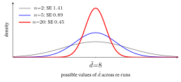
Now compare the two ways to test this invented table. Treating A’s five scores and B’s five scores as two unrelated piles, the variances of the two averages add (the variances of independent pieces add: two dice have a sum with variance \(35/12+35/12=35/6=5.83\); §8.3 states and checks it), so the wobble of the gap between the averages comes from the piles’ own spreads, \(s_A=2.95\) for A and \(s_B=3.4\) for B (each computed as §8.3 computes \(s_d\), dividing by \(n-1=4\); dividing by \(5\), as §1’s standard deviation does, gives \(2.6\) and \(3.1\)), and is \(\sqrt{s_A^2/5+s_B^2/5}=2.02\) (each average of five wobbles by its spread over \(\sqrt5\), as §8.3 explains).
Then \(t=8/2.02=3.96\) and \(p=0.0042\) (with \(8\) degrees of freedom, §8.3; this unpaired test is the pooled, equal-variance Student form, which assumes both groups share one variance; Welch’s form drops that assumption and gives \(0.0044\) here). Pairing uses only the \(d_i\): their spread is \(1.0\), the wobble is \(1.0/\sqrt5=0.447\), so \(t=17.9\) and \(p=0.000057\). The same data, a \(p\)-value about seventy times smaller, because the seeds’ shared lift no longer adds noise. That is how much sharper pairing can make the test, in an example built to show it: the same real gain is far easier to see.
A caution from the real five seeds. Pairing does not always win. On §8.4’s real scores the wobble falls from \(1.17\) (unpaired) to \(0.89\) (paired), so \(t\) rises from \(6.81\) to \(8.94\), yet the \(p\)-value rises from \(0.00014\) to \(0.00086\) (the unpaired test is again the pooled, equal-variance Student form; Welch’s unequal-variance form gives \(0.00065\), still below the paired \(p\)).
The reason is a price pairing pays: it halves the degrees of freedom (from \(8\) to \(4\); §8.3 says what these are), and fewer degrees of freedom mean fatter tails and a larger \(p\) (§8.3: the \(5\%\) cutoff is \(2.776\) at df \(=4\), \(2.228\) at \(10\), \(2.042\) at \(30\)). The unpaired \(8\) is \(5+5-2\) degrees of freedom. These seeds share some difficulty (in the figure The five seeds of the worked example the two models’ dots rise and fall together a little), but the saving, a wobble of \(1.17\) cut to \(0.89\), was smaller than the price on a table this small.
So why still pair? Choose the test from the design, before looking at either \(p\). The same seeds scored both models, so each seed’s two scores belong together, and the paired test is the one that matches. The unpaired test assumes two independent piles, which same-seed scores are not guaranteed to be. Picking whichever \(p\) is smaller afterwards would be a post hoc choice (Latin ‘after this’: made after seeing the result, which invalidates the \(p\)), like the one-sided trap of §8.6, Step 1.
8.3 The paired \(t\)-test, one move at a time
\[ t = \frac{\bar d}{\,s_d/\sqrt{n}\,}, \qquad \bar d = \frac1n\sum_{i} d_i, \qquad s_d = \sqrt{\frac{1}{n-1}\sum_i (d_i-\bar d)^2}. \]
Here \(n\) is the number of pairs (five seeds) and \(d_i\) is the \(i\)-th pair’s difference. Reading it as the section’s four moves: move 1 is the gap \(\bar d\), move 2 builds the wobble (first the spread \(s_d\), then the standard error, SE), move 3 is the ratio, and move 4 turns the ratio into a verdict. The numbers are §8.4’s.
Move 1, the gap: \(\bar d\). The average of the differences, \((7+9+7+11+6)/5=8\) milli-NDCG@10: the signal.
Move 2, the wobble, step (a): the spread of one seed’s gap, \(s_d\). Measure each seed’s distance from the average (\(-1,\,1,\,-1,\,3,\,-2\)), square the distances so that ups and downs both count, add them (\(16\)) and divide by \(n-1=4\), giving \(4\); the square root is \(s_d=2\). This is the noise in a single seed’s gap.
Why \(n-1\), not \(n\)? (A standard result of statistics, used here rather than proved.) The distances are measured from \(\bar d\), which was computed from these same \(d_i\) and so sits closer to them than the true mean does; the plain average of their squares (\(16/5=3.2\)) would come out too small by the factor \((n-1)/n\), a fifth too small at \(n=5\) (\(3.2\) against \(4\)), and dividing by \(n-1\) corrects that. The same “one value spent on \(\bar d\)” gives the test its degrees of freedom, below.
Move 2, step (b): the wobble of the average, \(\mathrm{SE}=s_d/\sqrt n\). One seed’s gap jumps by about \(s_d=2\). The average of several gaps jumps less, because ups and downs cancel: flip a coin \(4\) times and the share of heads bounces wildly (typically by \(0.25\)), flip it \(100\) times and it hugs \(0.5\) (typically within \(0.05\)): \(25\) times the flips, one fifth the wobble. This standard error (SE) is how much \(\bar d\) itself would wobble if you repeated the whole experiment. With \(s_d=2\):
| seeds \(n\) | \(2\) | \(5\) | \(20\) | \(100\) |
|---|---|---|---|---|
| \(\mathrm{SE}=2/\sqrt n\) | \(1.41\) | \(0.894\) | \(0.447\) | \(0.2\) |
| \(t=8/\mathrm{SE}\) (gap \(8\)) | \(5.7\) | \(8.9\) | \(17.9\) | \(40\) |
The figure Standard error shrinks with \(n\) draws the first three columns: the bell of possible \(\bar d\) narrows, and \(0\) sits more standard errors away. More seeds therefore give a test more power (§8.1: for a gain of \(2\), from \(40\%\) at five seeds to \(80\%\) at ten).
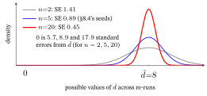
Why the square root (optional). Two facts are at work.
- Fact 1, exact: averaging divides the variance by \(n\). The variances of independent pieces add, so a sum of \(n\) draws, each with variance \(\sigma^2\), has variance \(n\sigma^2\). Dividing the sum by \(n\) divides every deviation by \(n\), so it divides the variance by \(n^2\), leaving \(\sigma^2/n\) and a standard deviation of \(\sigma/\sqrt n\). Check with §1’s die: one roll has variance \(35/12\approx2.92\); listing all \(36\) pairs of rolls, the average of two rolls has variance \(35/24\approx1.46\), exactly half. In practice \(\sigma\) is unknown, and \(s_d\), computed from our \(n\) differences, stands in for it.
- Fact 2, the Central Limit Theorem. The average of many independent noisy pieces is also approximately bell-shaped around the truth, whatever the shape of the pieces (formally, the sample mean is approximately \(\mathcal N(\mu,\sigma^2/n)\), a Gaussian from §2). That makes the \(t\)-test a fair approximation when the differences are not exactly normal, provided \(n\) is not tiny. With only a handful of pairs the theorem has little to work with, which is why §8.5 asks the differences themselves to be roughly normal. Check with §1’s die: one roll is flat (each face \(1/6\)), yet the average of two rolls already peaks in the middle: of the \(36\) pairs, \(6\) give an average of \(3.5\) and only \(1\) each gives \(1\) or \(6\). (A theorem taken as given here.)
Move 3, the ratio: \(t\). \(t=8/0.894=8.94\) is signal-to-noise: how many standard errors \(\bar d\) sits above \(0\). A large \(\lvert t\rvert\) (the size of \(t\), ignoring its sign) means luck alone would rarely produce a ratio this large (move 4 says how rarely).
Move 4, the verdict. It needs one more idea, the degrees of freedom, and then the distribution of luck.
Degrees of freedom (df). Only \(n-1\) of the distances \(d_i-\bar d\) are free: once you know \(\bar d\) and any \(n-1\) of them, the last is forced (they must sum to \(0\)). For §8.4’s seeds the distances \(-1,\,1,\,-1,\,3\) force the fifth to be \(-2\). So one was spent estimating \(\bar d\), and the test uses \(n-1\) df, here \(4\).
From \(t\) to the verdict, two equivalent ways, both through the Student-\(t\) distribution with those df: convert \(t\) to a \(p\)-value, or compare \(\lvert t\rvert\) with a critical value, the cutoff that pure luck exceeds only \(\alpha\) of the time. For df \(=4\) and \(\alpha=0.05\) (two-sided) that cutoff is \(2.776\). The next block says where both numbers come from.
The Student-\(t\) distribution, and where \(2.776\) and the \(p\)-value come from.
- What it is. It is the bell that §8.1’s table traced: the values of \(t\) you would get by re-running the five-seed experiment many times when A and B really are equal (drawn in §8.4, in the figure The \(t\)-test in one picture). It looks like the Gaussian bell of §2 but has fatter tails when there are few pairs, because \(s_d\) is itself estimated from those few pairs and is sometimes too small, which inflates \(t\). With df \(=4\), \(5\%\) of the area lies beyond \(\pm2.776\), where a Gaussian would put only \(0.55\%\); as \(n\) grows the curve approaches the Gaussian \(\mathcal N(0,1)\), whose \(5\%\) cutoff is \(1.96\) (in between: \(2.228\) at df \(=10\), \(2.042\) at df \(=30\)).
- Two readings of it. The \(p\)-value is the area under this curve beyond \(\pm t\), both tails, because the test is two-sided: a gap as large in B’s favor would have been just as surprising. The critical value is the \(t\) that leaves exactly \(2.5\%\) in each tail.
- How to compute them. Read the critical value from a printed \(t\)-table, or from one line of Python,
scipy.stats.t.ppf(0.975, 4)(ppfreturns the \(t\) with the given share of the area to its left, and \(97.5\%\) to its left leaves \(2.5\%\) to its right). The \(p\)-value of the worked example (\(t=8.944\) unrounded) is2*scipy.stats.t.sf(8.944, 4)\(=0.00086\): the area to the right of \(8.944\), doubled (§8.6 runs exactly this code). - A calculator shortcut (optional). For df \(=4\) only, a calculator can do it too: with \(x=t/\sqrt{t^2+4}\) (the \(4\) is the df), the two-tailed area is \(p=1-\tfrac32x+\tfrac12x^3\), a formula we take as given. At \(t=2.776\): \(x=0.8114\) and \(p=0.0500\); at \(t=8.944\): \(x=0.97590\) and \(p=0.00086\).
Why “Student”? William Sealy Gosset (Student, 1908, in the references) derived the distribution behind the \(t\)-test in 1908 while working at the Guinness brewery (small-sample quality control on barley), and published it under the pen name “Student” (Box, 1987, tells the story) — which stuck to both the distribution and the test. (His own statistic was a slightly differently scaled quantity he called \(z\); the form \(t\) used today came later.)
8.4 Worked example by hand
Five seeds. The score is NDCG@10 (Normalized Discounted Cumulative Gain at \(10\)), the standard ranking score for recommenders: it checks whether the items a user actually liked sit near the top of the model’s recommended list, looking only at the top \(10\) items (the “@10”; in general, the top \(K\)), and it runs from \(0\) to \(1\). It is built from zero in Evaluation Metrics §7; here it is just model quality, bigger is better. The scores below are in thousandths, written milli-NDCG@10 (\(\times10^{-3}\), so \(409=0.409\)). Model A against model B, with the arithmetic of §8.3’s move 1 and move 2 in the last three columns:
| seed | A | B | \(d = A-B\) | \(d-\bar d\) | \((d-\bar d)^2\) |
|---|---|---|---|---|---|
| 1 | 409 | 402 | 7 | \(-1\) | \(1\) |
| 2 | 410 | 401 | 9 | \(+1\) | \(1\) |
| 3 | 412 | 405 | 7 | \(-1\) | \(1\) |
| 4 | 410 | 399 | 11 | \(+3\) | \(9\) |
| 5 | 410 | 404 | 6 | \(-2\) | \(4\) |
| sum 40 | sum 0 | sum 16 |
- Move 1: \(\bar d = 40/5 = 8\).
- Move 2: \(s_d^2 = 16/(5-1) = 4\), so \(s_d = 2\); standard error \(= 2/\sqrt{5} \approx 0.894\).
- Move 3: \(t = 8 / 0.894 \approx 8.94\), with \(df = 4\).
- Move 4: \(p = 0.00086\), the area beyond \(\pm8.94\) on the \(t\)-curve with \(4\) df.
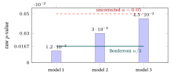
Since \(8.94\) is far above the critical value \(2.776\), we reject \(H_0\): the \(+8\) milli-NDCG@10 (\(+0.008\)) gain is significant, \(p \approx 0.00086\). Every seed has \(d_i>0\), and the gain (\(8\)) is \(8.9\) wobbles (standard errors) from \(0\) and dwarfs even the spread of single-seed gaps (\(s_d=2\)), so luck is a very poor explanation: if A and B were equally good, only about \(1\) re-run in \(1{,}160\) would give a ratio \(t\) this far from \(0\), in either direction. The figure The \(t\)-test in one picture shows where that sits on the luck bell.
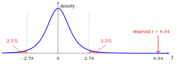
Reading the picture. The tall bell is what luck does when A and B are equal: almost all of it lies between \(-2.78\) and \(+2.78\). The arrow is our experiment, at \(t=8.94\), so far out that the part of the right-hand shaded tail lying beyond the arrow holds only \(0.043\%\) of the bell (too thin to see). That sliver, doubled for the other tail, is the \(p\)-value, \(0.00086\). Had the same five seeds given \(\bar d=3\) instead, the arrow would sit at \(t=3.35\), just past the shaded edge: significant, but only just (the middle row of the table Three gaps read against one wobble).
8.5 Caveats every comparison runs into
Five cautions and habits keep a result honest. Each comes with its reason.
Significance is not size. With enough seeds even a trivial gain turns “significant”. Take a gain of only \(0.5\) milli-NDCG@10 with \(s_d=1\):
| seeds \(n\) | \(5\) | \(20\) | \(100\) |
|---|---|---|---|
| \(t=0.5/(1/\sqrt n)\) | \(1.12\) | \(2.24\) | \(5.0\) |
| \(p\) | \(0.33\) | \(0.038\) | \(0.0000025\) |
At \(100\) seeds the result is wildly significant, yet the gain is \(0.0005\) NDCG@10, about \(0.12\%\) of a score near \(0.41\): too small to matter in most settings (a judgement from practice, not tested here). So always report the effect size (\(\bar d\)) beside \(p\), for example “+0.008 NDCG@10 (\(p<0.001\))”.
Report a confidence interval (CI), not just \(p\). The 95% confidence interval \(\bar d \pm t^{*}\,s_d/\sqrt n\) packages the effect size with its uncertainty in one object.
- The formula. The sign \(\pm\) reads “plus or minus”, so the interval runs from \(\bar d-t^{*}s_d/\sqrt n\) to \(\bar d+t^{*}s_d/\sqrt n\), where \(t^{*}\) is the critical value for df \(=n-1\) (§8.3): \(2.776\) for our five seeds, and smaller with more seeds (\(2.571\) at \(n=6\); §8.3 gives \(2.228\) at df \(=10\) and \(2.042\) at \(30\)).
- The numbers. \(8\pm2.776(0.894)=[5.5,\,10.5]\) milli-NDCG@10. The data are consistent with a true gain anywhere from about \(5.5\) to \(10.5\), and not with \(0\).
- What “95%” means. A promise about the recipe: repeat the whole five-seed experiment many times and build this interval each time, and about \(95\%\) of the intervals would contain the true mean gain: a computer that re-ran the five-seed experiment \(1{,}000\) times with a true gain of \(8\) and per-seed spread \(2\) (random seed \(2026\)) found \(957\) of the \(1{,}000\) intervals covering \(8\).
- The “excludes \(0\)” rule. If the \(95\%\) interval excludes \(0\), the two-sided test at \(\alpha=0.05\) (\(=1-0.95\)) is significant, so the interval gives the test’s verdict and more information besides.
The assumptions. The \(t\)-test assumes the differences are roughly normal (Gaussian) and the pairs independent. Seeds of one split vary only the training randomness, so their scores are usually treated as independent for the \(t\)-test (a convention, not a theorem; independent across seeds, while within one seed A’s and B’s scores are the pair, §8.2); folds overlap in training data, so the folds’ scores are not independent, and a \(t\)-test over folds tends to be optimistic: its \(p\) tends to be too small (scores that move together make their average swing more than independent scores would, but the standard-error formula assumes independence, so the standard error it divides by is too small; a claim from practice, not tested here).
If the differences are heavy-tailed (far-out values likelier than a bell allows, as with §2’s Laplace) or have a single wild outlier (one freak seed, like the \(30\) below), use the Wilcoxon signed-rank test (Frank Wilcoxon, 1945; with few pairs it cannot reach a small \(p\): §8.6, Step 2). It works with ranks: sort the sizes of the differences and number them \(1,2,3,\dots\) from the smallest, so a giant outlier counts only as “the largest” and cannot dominate (for \(d=[2,3,1,4,5,30]\) the \(30\) gets rank \(6\), one step above the \(5\); §8.7, Case 2). It is non-parametric because it assumes no curve fixed by a few parameters (such as the Gaussian’s mean and variance of §2), only that if A and B were equally good the differences would fall symmetrically around \(0\).
On §8.4’s five seeds it gives \(p=0.0625\) and can go no lower (§8.6, Step 2, shows why), the same floor the win-counting game of §8.1 hit: tiny \(n\) starves non-parametric tests.
Multiple comparisons. Each test carries its own \(\alpha\) chance of a false positive, so running many inflates the chance that some test fires by luck. Each test of equal models stays quiet with chance \(0.95\), all \(m\) stay quiet with chance \(0.95^{m}\) (independent tests, §1), and at least one fires with chance \(1-0.95^{m}\).
| tests \(m\) | \(1\) | \(3\) | \(20\) |
|---|---|---|---|
| chance at least one fires by luck | \(5\%\) | \(14\%\) | \(64\%\) |
Two standard fixes:
- Bonferroni (after Carlo Bonferroni): divide \(\alpha\) by the number of tests, so for \(20\) tests call a result significant only if \(p<0.05/20=0.0025\). Why it works: each test now fires by luck with chance at most \(0.0025\), so the chance that any of the \(20\) fires is at most \(20\times0.0025=5\%\) (\(1-0.9975^{20}=4.9\%\) for independent tests), back from \(64\%\).
- An omnibus test (for reference: this chapter does not work one) is one test across all the models and datasets at once (one test at \(\alpha\) for all the models, so luck gets one chance rather than one per pair), such as the Friedman test (a rank-based test across several models), followed by pairwise comparisons run only after it finds some difference. These are called post-hoc tests, but they are planned before any result is seen, unlike the after-the-fact choice of test that §8.2 warns against; Demšar (2006) recommends this design.
Report the protocol. State the number of seeds or folds, the test (paired \(t\) or Wilcoxon) and \(\alpha\); mark wins with, for example, \(^{*}p<0.05\), \(^{**}p<0.01\). This is what a careful reader will ask for: a few seeds plus a paired test that comes out significant turns “our number is bigger” into “our number is reliably bigger across seeds.”
In practice. When comparing two recommender models:
- Pair runs on the same seeds (or folds, remembering the caution above that a \(t\)-test over folds is optimistic) whenever both models can be scored on the same units: pairing cancels each unit’s shared difficulty, though it spends degrees of freedom (§8.2).
- Use a paired \(t\)-test when the per-pair differences look roughly normal; switch to the Wilcoxon signed-rank test when they are heavy-tailed or have an outlier (the pair-count floor is in §8.6, Step 2).
- Default to two-sided unless you pre-registered (wrote down before running anything) a directional (one-sided) hypothesis: on §8.4’s seeds that halves \(p\) from \(0.00086\) to \(0.00043\) (§8.6, Step 1).
- When you test many variants or datasets at once, correct for multiple comparisons (Bonferroni: divide \(\alpha\) by the number of tests; or Holm’s stepwise refinement, §8.6, Step 3).
- Always report an effect size and a 95% confidence interval alongside \(p\) — a tiny gain can be “significant” with enough seeds yet matter nothing in deployment.
The Evaluation Metrics chapter’s “evaluate honestly” section builds directly on this protocol.
8.6 The recipe — a runnable significance-test checklist
The prose above scatters the moving parts; here they are as one ordered procedure you can run top to bottom on a real A-vs-B comparison. Each step is a decision; the answer routes the next one.
Step 0 — fix the pairing unit, and pair on it. Decide what each pair is — one seed, one cross-validation fold, or one test user (per-user scores) — and evaluate both models on the same units, so \(d_i=A_i-B_i\) cancels that unit’s shared difficulty (§8.2). Score both models on every one of the \(n\) units: a unit missing for either model cannot be paired, so it drops out. (Seeds are the usual unit in recommender-system ablation studies, experiments that remove one component of a model at a time to measure what it contributes: model A the full model, model B the same model without that component, so on §8.4’s seeds \(\bar d=8\) would be what the component adds. The worked example below uses \(n=5\) seeds.)
Step 1 — choose sidedness, before looking at the data. Two-sided (“A differs from B”) is the default and the safe choice. Use one-sided (“A is better than B”) only if you pre-registered that direction — it halves the \(p\)-value when the result goes the pre-registered way (our example: two-sided \(p=0.00086\) vs one-sided \(0.00043\)) and gives a \(p\) near \(1\) when it goes the other way, so claiming it post hoc, after seeing A win, is a classic way to manufacture significance.
Step 2 — pick the test from the shape of the differences \(d_i\). Look at the \(n\) values \(d_i\) (not the raw scores):
- roughly symmetric / bell-ish \(\to\) paired \(t\)-test (§8.3). With only a handful of pairs you cannot really check normality, so the \(t\)-test is used by convention for a few roughly symmetric \(d_i\) with no outlier (a working rule from practice, not a guarantee, not tested here).
- visibly heavy-tailed, or with a wild outlier \(\to\) Wilcoxon signed-rank (it ranks the \(d_i\), so one freak seed can’t dominate). But mind the floor: with all \(d_i\) the same sign the smallest two-sided \(p\) Wilcoxon can return is \(2/2^{n}\), so it needs \(n\ge 6\) to even reach \(p<0.05\) (\(2/2^{5}=0.0625\) at \(n{=}5\); \(2/2^{6}=0.03125\) at \(n{=}6\) — verified below). Why \(2/2^{n}\)? If A and B were equally good, each difference would be \(+\) or \(-\) with probability \(\tfrac12\), independently — like \(n\) fair coin flips — so “all positive” has probability \((\tfrac12)^{n}\) (§1: independent chances multiply); a two-sided test also counts “all negative”, so the most extreme result possible has \(p=2\times(\tfrac12)^{n}=2/2^{n}\). Below that floor, collect more pairs (the \(t\)-test is all that is left; report that an outlier makes it unreliable).
The choice, as three questions in order:
- Do the \(d_i\) show heavy tails or an outlier? If not (symmetric, bell-ish), use the paired \(t\)-test (§8.3) and go on to the \(p\)-value.
- If they do, are there enough pairs for Wilcoxon to reach \(p<0.05\), the floor above (\(2/2^{n}\))? If so, use the Wilcoxon signed-rank test.
- If there are not enough, it cannot reach \(p<0.05\): get more pairs, as said above.
Either way the \(p\)-value comes from whichever test you ran, and Step 3 (multiplicity) and Step 4 (effect size and CI) follow.
Step 3 — correct for multiplicity if you ran more than one test. Comparing A against \(m\) baselines, or across \(m\) datasets, runs \(m\) tests, and each carries its own \(\alpha\) chance of a false positive — so the chance that at least one fires by luck balloons. With \(m=3\) independent tests at \(\alpha=0.05\) and no real differences, the chance that none fires is \(0.95^{3}\) (§1: independent chances multiply), so the chance that at least one does is \(1-0.95^{3}\approx0.14\); with \(m=20\) it is \(1-0.95^{20}\approx0.64\).
Divide the bar: Bonferroni uses \(\alpha/m\) (compare each \(p\) to \(0.05/m\)). Holm is a stepwise version: sort the \(m\) \(p\)-values from smallest to largest; compare the smallest with \(\alpha/m\), the next with \(\alpha/(m-1)\), and so on up to the largest with \(\alpha/1\); stop at the first one that fails — it and every larger \(p\) are not significant. For \(p=0.012,\,0.020,\,0.024\) and \(m=3\), Bonferroni’s bar \(0.0167\) keeps only \(0.012\), while Holm’s bars \(0.0167,\,0.025,\,0.05\) keep all three (§8.7, Case 3, runs one where the two agree).
Holm is never more conservative, because its first bar is Bonferroni’s \(\alpha/m\) and every later bar is larger; and it keeps the same guarantee: with no real differences, the chance that any test fires stays at most \(\alpha\). A single pre-planned A-vs-B comparison needs no correction.
Step 4 — report the effect size with its CI, never \(p\) alone. Quote \(\bar d\) (the mean gain) and its 95% CI \(\bar d \pm t^{*}s_d/\sqrt n\) beside \(p\). The CI says both how big and how sure; it is significant at \(\alpha=0.05\) exactly when it excludes \(0\) (a \(99\%\) interval goes with \(\alpha=0.01\)) — the same verdict as the \(t\)-test (a rank test can differ: in §8.7’s Case 2 the \(t\)-interval is \([-4.2,\,19.2]\), which includes \(0\), while Wilcoxon gives \(p=0.031\)), but its width also shows how small the true gain could be: an interval like \([0.1,\,0.3]\) milli-NDCG@10 excludes \(0\) yet allows a gain of only \(0.1\), whereas §8.5’s \([5.5,\,10.5]\) keeps even its smallest plausible gain at \(5.5\).
The recipe on the worked example, end to end (the same five seeds, \(d=[7,9,7,11,6]\)):
Unit = seed, \(n=5\) (Step 0). Two-sided, pre-chosen (Step 1). The \(d_i\) show no outlier or heavy tail, so paired \(t\)-test (Step 2): \(t=8.94\), \(df=4\), \(p\approx 0.00086<0.05\) \(\to\) reject \(H_0\). A single comparison, so no multiplicity correction (Step 3). Report (Step 4): \(\bar d=+8\) milli-NDCG@10, 95% CI \([5.5,\,10.5]\) (excludes \(0\) ✓), \(p<0.001\). Cross-check: Wilcoxon on these five gives \(p=0.0625\) — it cannot beat its \(n{=}5\) floor (Step 2).
The same recipe as one runnable listing:
import numpy as np
from scipy import stats
A = np.array([409,410,412,410,410]) # model A, milli-NDCG@10
B = np.array([402,401,405,399,404]) # model B, same 5 seeds
d = A - B # paired differences (Step 0)
n = len(d); dbar = d.mean(); sd = d.std(ddof=1)
t = dbar / (sd/np.sqrt(n)); df = n - 1
p_two = 2*stats.t.sf(abs(t), df) # two-sided p (Step 1)
tstar = stats.t.ppf(0.975, df) # 95% CI multiplier, df=4
ci = (dbar - tstar*sd/np.sqrt(n), dbar + tstar*sd/np.sqrt(n))
print(round(t,2), df, round(p_two,5)) # -> 8.94 4 0.00086 (Step 2)
print(round(dbar,1), [float(round(c,1)) for c in ci]) # -> 8.0 [5.5, 10.5] (Step 4)
print(round(stats.wilcoxon(d,method="exact").pvalue,4)) # -> 0.0625 (floor at n=5)
print([2/2**k for k in (5,6)]) # -> [0.0625, 0.03125] (why n>=6)8.7 Three worked cases that flip the verdict
A significance test earns its place when it can change a decision. Here are three short cases, each in the milli-NDCG@10 units of §8.4; \(d_i\) is again A’s per-seed score minus B’s, so a positive \(d_i\) means A won that seed.
Case 1 — a positive headline the data cannot back. Five seeds give \(d=[7,-2,9,-5,1]\). The mean gain is \(\bar d=+2.0\) — positive, so the headline says A wins. But the seeds disagree in sign (A won three, lost two), so the spread is large: \(s_d=5.916\), \(\text{SE}=5.916/\sqrt5=2.646\), hence \(t=2.0/2.646=0.76\) on \(4\) df, \(p=0.49\), and the \(95\%\) CI is \(2.0\pm2.776(2.646)=[-5.3,\,+9.3]\) — it straddles \(0\). Verdict: do not claim A is better. The lesson §8.4’s clean win could not teach: what decides is the mean relative to its wobble, the standard error (\(0.89\) there, \(2.65\) here), never the headline mean alone (\(+8\) there, \(+2\) here).
Case 2 — when the \(t\)-test is fooled, rank instead (Wilcoxon by hand). Six seeds: \(d=[2,3,1,4,5,30]\) — five small consistent wins and one outlier.
- The \(t\)-test chokes. The \(30\) inflates \(s_d\) to \(11.11\), so \(\mathrm{SE}=11.11/\sqrt6=4.54\) and \(t=7.5/4.54=1.65\) on \(5\) df, \(p=0.16\) — “not significant,” even though every seed favored A (with \(6\) seeds, df \(=5\) and \(t^{*}=2.571\), so the \(95\%\) CI is \(7.5\pm2.571(4.54)=[-4.2,\,19.2]\), which includes \(0\)).
- The Wilcoxon signed-rank test throws away magnitudes and keeps only signs and ranks. Rank the \(|d_i|\): \(\{1,2,3,4,5,30\}\to\) ranks \(1,2,3,4,5,6\). Sum the ranks of the negative differences — there are none — so \(W^{-}=0\) (and \(W^{+}=21\)); the statistic is \(W=\min(W^{+},W^{-})=0\).
- Its \(p\)-value. With all \(n=6\) signs agreeing, the two-sided \(p\) hits its floor \(2/2^{6}=0.031<0.05\) — significant. Why \(2/64\): if A and B were equal, each of the \(2^{6}=64\) patterns of signs is equally likely (the coin-flip argument of Step 2), and only two of them, all \(+\) and all \(-\), give \(W=0\). One step less extreme — \(W=1\), only the smallest difference having the minority sign — adds two more patterns (that sign negative, or positive), so \(4\) of the \(64\) are at least that extreme and \(p=4/64=0.0625\), above \(0.05\). Counting wins (§8.1’s game) would give the same \(2/64\) for six wins of six; ranks pay off when there is a loss: with one small loss (\(W=1\)) Wilcoxon gives \(4/64=0.0625\), while five wins of six by counting gives \(14/64=0.22\).
- Verdict. Same data, opposite verdict: the rank test shrugged off the outlier that wrecked the \(t\)-test (the “outlier” branch of the §8.6 recipe).
Case 3 — test enough models and one wins by luck (multiplicity). You compare \(m=3\) candidates against the baseline and get \(p=\{0.012,\,0.030,\,0.045\}\). Uncorrected, all three clear \(0.05\) — three “wins.” But three tests give three shots at a false positive. Bonferroni divides the bar: compare each \(p\) to \(\alpha/m=0.05/3=0.0167\). Now only \(0.012\) survives. (Holm — the sorted \(p\)-values against \(\alpha/3=0.0167\), \(\alpha/2=0.025\) and \(\alpha/1=0.05\) — agrees: \(0.012<0.0167\) passes, then \(0.030>0.025\) fails, and Holm stops there.) After correction, the evidence for models 2 and 3 is no longer strong enough to claim a win. They may still be real improvements — but three tests gave luck three chances, so these data cannot tell them apart from luck. The figure Multiple comparisons can manufacture false wins below draws the three \(p\)-values against both bars.
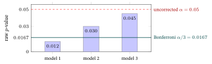
The through-line. In all three cases the headline number, the wrong test, or an uncorrected \(p\) gave a verdict the evidence did not support: a positive mean we could not tell apart from noise, a “non-significant” \(t\) the rank test overturned, three “wins” of which only one survives correction. That is why significance testing, not the headline number, is what turns a result into a finding. For per-user scores far from a bell, the bootstrap CI needs no bell-shape assumption: it re-draws the test users at random with replacement (one user may be drawn twice), recomputes the score each time, and reads the interval off those scores. A redraw of four users scoring \(0.2,\,0.4,\,0.6,\,0.8\) might be \(0.4,\,0.4,\,0.8,\,0.2\) (mean \(0.45\) against \(0.5\)); thousands of redraws give a spread of means, and the middle \(95\%\) is the interval. Evaluation Metrics §11d works it.
9. Exercises
Twelve by-hand problems spanning §1–§8. Each is (compute) — a number to crank, (concept) — a why-question to reason out, (extend) — push an idea one step past the text, or (apply) — use it as the book will. They follow the sections in order, §1 first and §8 last. Each problem is self-contained except E7(c), which builds on E5, and E10, which builds on E9; they reuse this chapter’s own setups (the coin, softmax scores, paired seeds), most with fresh numbers; nothing needs a calculator beyond arithmetic, a square root, \(\ln\), \(\log_2\) (on a calculator, \(\log_2 x=\ln x/\ln 2\)) and \(e^{x}\). Full worked solutions are in the Solutions appendix at the back of the book — try each first, then check.
E1 (compute) — expectation and variance of a tiny random variable. A fair four-sided die shows \(x\in\{1,2,3,4\}\), each with probability \(\tfrac14\). Using \(\mathbb{E}[X]=\sum_x x\,p(x)\) and the shortcut \(\operatorname{Var}[X]=\mathbb{E}[X^2]-\mu^2\) (§1), compute \(\mathbb{E}[X]\) and \(\operatorname{Var}[X]\). (The six-sided die in §1 gave \(3.5\) and \(35/12\); redo the arithmetic for four faces.)
E2 (concept) — name that distribution. For each description, name which of §2’s five distributions (Bernoulli, Categorical, Gaussian, Laplace, Beta) it is, and give its parameter(s): (a) “did this user finish the episode they started?”; (b) “which one of \(5\) shelves did they open first?”; (c) the error of a rating predictor whose log has a few typos far off the scale; (d) a belief about a coin’s unknown bias, written as the pseudo-count form “I’ve effectively seen \(6\) heads and \(2\) tails.” For (d), state the \((\alpha,\beta)\) and, using \(\mathbb{E}[\theta]=\alpha/(\alpha+\beta)\), its mean. Finally: for the Bernoulli in (a) with \(p=0.8\) (the §3 coin), give \(\mathbb{E}[X]\) and \(\operatorname{Var}[X]\) from \(\mathbb{E}[X]=p,\ \operatorname{Var}[X]=p(1-p)\).
E3 (compute) — odds → logit → sigmoid. A second coin lands heads with \(p=0.7\). (a) Compute its odds \(p/(1-p)\). (b) Compute the logit \(\ln\!\big(p/(1-p)\big)\). (c) Now treat that logit as a model score \(z\) and run it through the sigmoid \(\sigma(z)=1/(1+e^{-z})\); compare the result with \(p\). (d) As a separate check, evaluate \(\sigma(3)\).
E4 (compute) — softmax of three scores. A classifier emits scores \(\mathbf z=[1,0,0]\) for classes \(A,B,C\). Using \(\operatorname{softmax}(\mathbf z)_c=e^{z_c}/\sum_k e^{z_k}\) (§3) with \(e^{1}\approx2.718\), compute the three probabilities (round to three decimals) and confirm they sum to \(1\). Which class wins, and do \(B\) and \(C\) come out equal? Say why in one line, using §3.
E5 (compute) — MLE for a coin. You flip a coin 8 times and see 6 heads, 2 tails. Write its unknown heads-probability as \(\theta\), as in §4; the likelihood is \(L(\theta)=\theta^{6}(1-\theta)^{2}\). Set the derivative of \(\log L(\theta)=6\ln\theta+2\ln(1-\theta)\) to zero (§4’s method, with the two slopes from the toolkit box at the end of §1) and solve for \(\hat\theta_{\text{MLE}}\). Hand-check by plugging your answer back into \(\tfrac{6}{\theta}=\tfrac{2}{1-\theta}\).
E6 (apply) — Bayes’ rule, a bot detector. §5’s medical test in a recommender’s setting: \(2\%\) of accounts are bots, \(\Pr(S)=0.02\) (here \(S\) is “a bot”); a bot detector flags \(95\%\) of bots, \(\Pr(+\mid S)=0.95\), and \(10\%\) of human accounts, \(\Pr(+\mid\neg S)=0.10\). An account is flagged. (a) Compute the evidence \(\Pr(+)\) via the law of total probability, then the posterior \(\Pr(S\mid+)\) with Bayes’ rule. (b) Redo it by the counting picture over \(10{,}000\) accounts (how many true vs false positives?) and confirm you get the same number. Why is it so far below \(95\%\)? (One line, using §5.)
E7 (extend) — MLE vs MAP: the prior as a regularizer. Take the same coin as E5 (6 heads, 2 tails) and add a moderate Beta\((4,4)\) prior (§6; it acts like three heads and three tails already seen). (a) Using Beta–Bernoulli conjugacy (“add the counts to the prior exponents”), write the posterior as a Beta\((\alpha_{\text{post}},\beta_{\text{post}})\). (b) Its MAP estimate is the mode \(\dfrac{\alpha_{\text{post}}-1}{\alpha_{\text{post}}+\beta_{\text{post}}-2}\) — compute it. (c) Compare the three numbers — MLE (E5), the prior mean \(0.5\), and your MAP — and say in one sentence which way the prior pulled the estimate, and what the analogous L2 effect on a weight would be. (d) With §6’s firm Beta\((10,10)\) prior instead, how many heads in \(8\) flips does the MAP need to exceed \(0.6\)?
E8 (compute) — entropy, cross-entropy, KL. Truth is a fair coin \(p=[0.5,0.5]\); a model predicts \(q=[0.7,0.3]\) (a new \(q\): the §7 text works \([0.9,0.1]\) and \([0.8,0.2]\)). Compute (a) the entropy \(H(p)\) in bits (\(\log_2\)); (b) the cross-entropy \(H(p,q)=-\sum_x p(x)\ln q(x)\) in nats; (c) the KL divergence \(D_{\mathrm{KL}}(p\Vert q)=\sum_x p(x)\ln\frac{p(x)}{q(x)}\) in nats; and (d) verify the identity \(D_{\mathrm{KL}}(p\Vert q)=H(p,q)-H(p)\) (use \(H(p)\) from (a), converted to nats). Useful logs: \(\ln 0.5=-0.693,\ \ln 0.7=-0.357,\ \ln 0.3=-1.204\).
E9 (apply) — a paired \(t\)-test over seeds. Model A and model B are evaluated on the same 5 seeds; the per-seed differences \(d_i=A_i-B_i\) (fresh numbers, in the milli-NDCG@10 units of §8.4) are \(d=[3,5,4,6,2]\). Compute (a) the mean \(\bar d\); (b) the sample standard deviation \(s_d=\sqrt{\tfrac{1}{n-1}\sum_i(d_i-\bar d)^2}\); (c) the standard error \(s_d/\sqrt{n}\) and the statistic \(t=\bar d/(s_d/\sqrt n)\) with its degrees of freedom. The two-sided critical value at \(\alpha=0.05\) is \(2.776\) for df \(=4\) and \(2.571\) for df \(=5\); use the one for your df. Do you reject \(H_0\)? (d) Give the 95% CI \(\bar d\pm t^{*}\,(s_d/\sqrt n)\) with that critical value \(t^{*}\). Does it include \(0\), and does that agree with (c)?
E10 (concept) — more seeds and the standard error. In E9 the standard error was \(s_d/\sqrt n\). (a) If you re-ran the experiment with \(n=10\) seeds and the spread \(s_d\) and the mean gain \(\bar d\) stayed at their E9 values, what would happen to the standard error, and hence to \(t\) and the chance of detecting a real gain (the test’s power)? Give the factor by which the standard error shrinks and \(t\) grows, and say in words what happens to power. (b) Now suppose the per-seed differences are independent and each has variance \(4\) (standard deviation \(2\)). What are the variance and the standard deviation of the average of \(n=10\) of them? Which of the two shrinks by the factor \(n\), and which by \(\sqrt n\)?
E11 (compute) — Wilcoxon signed-rank by hand. Six paired seed-differences are
\[d=[+3,+1,+5,-2,+4,+6]\quad(\text{A minus B, as in §8}).\] (a) Rank the absolute values \(|d_i|\) smallest to largest. (b) Sum the ranks of the negative differences to get \(W^{-}\), and of the positive ones to get \(W^{+}\) (the two add up to \(1+2+\dots+6=21\)). (c) The statistic is \(W=\min(W^{+},W^{-})\); recall (§8.7) that at \(n=6\) the smallest two-sided \(p\) is the floor \(2/2^{6}=0.031\), reached only when all signs agree (\(W=0\)). Is this result significant at \(\alpha=0.05\)? (Count how many of the \(2^{6}=64\) equally likely sign patterns give a \(W\) at most as small as yours; that count over \(64\) is the two-sided \(p\).)
E12 (apply) — ship, or not? You test four new models against a baseline. The best improves NDCG@10 by \(+0.004\) (that is \(+4\) milli-NDCG@10, the units of §8.4) over 5 seeds, with a \(95\%\) CI of \([+0.0003,\,+0.0077]\) and a raw \(p=0.04\). (a) From that CI alone, would you conclude the model is better? (b) You ran four tests, not one — apply Bonferroni at \(\alpha=0.05\): does \(p=0.04\) survive? (c) Ship or not, and why, in two lines? (The §8.7 lesson, as a decision.)
10. Where this fits in the book
The main downstream uses of this chapter’s ideas (a list of the main uses, not of every one: a concept with no row, such as the Law of Large Numbers, mostly serves this chapter’s own arguments):
| Foundation (here) | Used in | As… |
|---|---|---|
| Distributions → \(-\log\) (§2) | Loss Functions & Regularizers §2, §6 | MSE / MAE / BCE / cross-entropy |
| Sigmoid, logit, softmax (§3) | Loss Functions & Regularizers §2.2, §9; Self-Supervised & Contrastive Learning §3; Neural Networks & Back-propagation §2 (the sigmoid activation) and §4 (the softmax output layer); Click-Through Rate Prediction & Feature Interactions (its logistic-regression start) | scores → probabilities; BPR’s \(\sigma\); InfoNCE |
| Beta, pseudo-counts, conjugacy (§2, §6) | Bandits & Online Recommendation §5 | the Beta posteriors of Thompson sampling |
| Likelihood, NLL, MLE (§4) | Loss Functions & Regularizers §6 | most standard losses are negative log-likelihoods |
| Bayes: prior/likelihood/posterior (§5) | Loss Functions & Regularizers §6, §9 | the MAP derivation; the “Bayesian” in BPR |
| MLE vs MAP (§6) | Loss Functions & Regularizers §6 | loss + regularizer; Gaussian prior → L2 |
| Expectation (§1) | Loss Functions & Regularizers §1 (empirical risk: the loss averaged over the training data); Self-Supervised & Contrastive Learning §3 (alignment and uniformity: two averages taken over pairs of examples) | averages of losses |
| Entropy / cross-entropy / KL (§7) | Loss Functions & Regularizers §2 (cross-entropy loss); Self-Supervised & Contrastive Learning §3 (InfoNCE) and §7 (mutual information); the KL term in the Mult-VAE sidebar of Self-Supervised & Contrastive Learning (a VAE that rebuilds a user’s click vector) | the standard classification loss; the KL term in a VAE |
| Significance test: paired \(t\) (§8) | Evaluation Metrics §11 (paired \(t\)-test and confidence interval over seeds); empirical ML papers and ablation tables | “is the gain real, or noise?” |
The main line through the book (the table above lists other chapters that use these pieces too, such as Evaluation Metrics for §8 and Bandits & Online Recommendation for §2 and §6):
THIS CHAPTER (probability → likelihood → Bayes → MAP)
│
▼
LOSS FUNCTIONS & REGULARIZERS
loss = −log p(data|θ); regularizer = −log p(θ)
MAP = argmin (loss + reg)
│
▼
FROM GRAPHS TO LIGHTGCN → SELF-SUPERVISED & CONTRASTIVE LEARNING
→ THE SPECTRAL / GRAPH-FILTER VIEW
LightGCN (a graph-based recommender model), trained with
the BPR loss + L2 (together, a Bayesian MAP estimate);
then self-supervised and spectral methods built on topIf §6’s result, that loss + regularizer is \(-\log\)(likelihood × prior), feels obvious now, the losses and regularizers in the rest of the book will too.
11. Glossary
| Term | Plain meaning |
|---|---|
| Random variable | A quantity whose value is uncertain (coin, die, temperature). |
| Sample space / event | The set of possible outcomes / a subset of them. |
| PMF / PDF | Probability mass (discrete) / density (continuous) function; sums/integrates to 1. |
| CDF \(F(x)\) | Cumulative distribution function \(F(x)=\Pr(X\le x)\) — the running total of probability; a different function describing the same distribution. |
| Expectation \(\mathbb{E}[X]\) / mean \(\mu\) | Probability-weighted average value. |
| Variance \(\sigma^2\) | Expected squared distance from the mean; spread. |
| Standard deviation \(\sigma\) | \(\sqrt{\operatorname{Var}[X]}\); the spread in the same units as \(X\) (§1). |
| Law of Large Numbers | The sample average converges to the expectation as samples accumulate. |
| Conditional probability \(\Pr(A\mid B)\) | Probability of \(A\) given \(B\) occurred \(=\Pr(A\cap B)/\Pr(B)\). |
| Independence | \(\Pr(A\cap B)=\Pr(A)\Pr(B)\); one event tells you nothing about the other. |
| Complement \(\neg B\) | “Not \(B\)”; \(\Pr(\neg B)=1-\Pr(B)\) (§1). |
| Joint / marginal | Joint \(p(x,y)=\Pr(X{=}x\text{ and }Y{=}y)\), the chance of each pair of values; marginal \(p(x)=\sum_y p(x,y)\) (sum the joint over the other variable — the row totals in the margin of the grid). |
| Law of total probability | \(\Pr(A)=\sum_j\Pr(A\mid B_j)\Pr(B_j)\) over cases \(B_j\) that do not overlap and together cover every outcome (e.g. \(B\) and \(\neg B\)); the engine of Bayes’ evidence term. |
| Loss | A single number scoring how badly a model’s predictions fit the data; training adjusts the model to make it small (§2). |
| Bernoulli | One yes/no with parameter \(p\); \(-\log\) → BCE. |
| Categorical | One of \(K\) classes; \(-\log\) → cross-entropy; paired with softmax. |
| Gaussian (Normal) | Bell curve \(\mathcal N(\mu,\sigma^2)\); \(-\log\) → squared error (MSE) when \(\sigma\) is the same fixed number for every point (§4). |
| Laplace | Peaked/heavy-tailed \((\mu,b)\); \(-\log\) → absolute error (MAE) when \(b\) is the same fixed number for every point. |
| Beta | Distribution over a probability; conjugate prior for Bernoulli. |
| Mode | The most plausible value — where a distribution peaks (for a continuous variable the height of the curve at the mode is a density, not a probability: §1); for Beta\((\alpha,\beta)\) with \(\alpha,\beta>1\) it is \((\alpha-1)/(\alpha+\beta-2)\) (§2, §6). |
| Noise | A random error added on top of a true value (a bathroom scale’s reading is your true weight plus a small random wobble) (§2). |
| Regression | Predicting a real number, such as a price (§2). |
| Robustness | Resistance to a few wildly-off values: the Laplace / MAE / median are robust, the Gaussian / MSE / mean are not (§2). |
| Normalizing constant | The factor that makes a density’s area (or a list of probabilities) equal \(1\); Beta\((2,2)\) has \(6\) (§2). |
| Pseudo-count | The heads and tails a Beta prior behaves as if already seen: \(\alpha-1\) and \(\beta-1\) (§2). |
| Median | The middle value once the data are sorted; the single value that minimizes the total absolute error (§2). |
| Odds | \(p/(1-p)\). |
| Logit (log-odds) | \(\ln\!\big(p/(1-p)\big)\); maps \((0,1)\to(-\infty,\infty)\). |
| Sigmoid \(\sigma(z)\) | \(1/(1+e^{-z})\); inverse of the logit; score → probability. |
| Softmax | Multi-class sigmoid; scores → a probability distribution. |
| One-hot | A list with a single \(1\) and \(0\)s elsewhere, like \([1,0,0]\) (§3). |
| Temperature \(\tau\) | Divides the scores before a softmax: a small \(\tau\) gives a nearly one-hot output, a large \(\tau\) a nearly uniform one (§3). |
| Gradient | The slope (or slopes) a model follows downhill when it trains (§3; Calculus primer). |
| Multi-label | Several independent yes/no labels at once, such as a film that is both a comedy and a drama; each gets a sigmoid (§3). |
| Monotonic | Here, increasing (a bigger input always gives a bigger output), like \(\log\) and \(e^{x}\), so it keeps the ranking of any list (§3). |
| InfoNCE | A contrastive training loss: a softmax that must pick a matching pair out of mismatched ones (§3; §7 for its link to mutual information). |
| BPR | Bayesian Personalized Ranking: a loss that teaches a recommender to rank an item a user chose above one they did not; it applies a sigmoid to the score gap (§3). |
| Likelihood \(L(\theta)\) | \(p(\text{data}\mid\theta)\) read as a function of \(\theta\) (data fixed). |
| Log-likelihood | \(\log L(\theta)\); products become sums. |
| NLL | Negative log-likelihood \(=-\log L\); minimizing it = MLE; this is a loss. |
| Surprise / self-information | \(-\log p(x)\); how surprising an outcome is (\(0\) if certain, \(\to\infty\) if rare). |
| Entropy \(H(p)\) | \(-\sum p\log p\): average surprise / uncertainty (maximal at uniform). In bits with \(\log_2\) (the average yes/no questions, or bits to store one sample, as in §7’s examples), in nats with \(\ln\). |
| Bits / nats | Units of entropy: \(\log_2\) gives bits, \(\ln\) gives nats; \(1\) bit \(=\ln 2\approx0.693\) nats (§7). |
| Binary entropy | The entropy of a two-outcome variable with probabilities \(\theta\) and \(1-\theta\): \(-\theta\log_2\theta-(1-\theta)\log_2(1-\theta)\), which peaks at \(1\) bit for \(\theta=\tfrac12\) (§7). |
| Cross-entropy \(H(p,q)\) | \(-\sum p\log q\); surprise of \(p\)’s outcomes scored by model \(q\) — the standard classification loss. |
| KL divergence \(D_{\mathrm{KL}}(p\Vert q)\) | \(H(p,q)-H(p)\ge0\); extra surprise from using \(q\) not \(p\); asymmetric (a divergence, not a distance). |
| Mutual information | How much knowing one variable tells you about another: the KL divergence between their joint distribution and the product of their separate ones; zero exactly when they are independent (§7). |
| Variational autoencoder (VAE) / ELBO | A network that learns to generate new data / its training objective, the evidence lower bound, which can never exceed the log of the evidence (§5); it contains a KL term that keeps each example’s code near a prior (§7). |
| Knowledge distillation | Training a small model to match a large model’s output probabilities; the KL divergence measures the mismatch (§7). |
| RLHF / policy | Reinforcement learning from human feedback: tuning a language model toward the answers people prefer / the rule a model uses to choose its outputs; a KL penalty keeps the tuned policy near the original (§7). |
| t-SNE / variational inference | Drawing high-dimensional data as a 2-D map by making a KL divergence small / replacing a hard-to-compute posterior (§5) by the closest member of a simpler family, closest measured by KL (§7). |
| Decision tree / information gain | A flowchart of yes/no questions that sorts examples into groups / how much a question reduces the entropy of the labels; the tree asks the question with the largest gain first (§7). |
| Maximum-entropy model | Among all distributions that match what you know, the most uncertain one: knowing nothing about a die, \(\tfrac16\) for each face (§7). |
| Entropy bonus / exploring | In reinforcement learning (RL, learning by trial and reward), a reward proportional to the entropy of a model’s choices / what the bonus buys: trying actions other than the one that looks best so far (§7). |
| MLE | Maximum Likelihood Estimate; \(\theta\) that best explains the data. |
| Bayes’ rule | posterior \(\propto\) likelihood \(\times\) prior. |
| Prior \(p(\theta)\) | Belief about \(\theta\) before data. |
| Evidence \(p(D)\) | Normalizer; data probability averaged over \(\theta\), each \(\theta\) weighted by its prior (a.k.a. marginal likelihood). |
| Posterior \(p(\theta\mid D)\) | Updated belief after data. |
| MAP | Maximum A Posteriori; the \(\theta\) at the peak of the posterior — it maximizes likelihood \(\times\) prior, i.e. minimizes loss \(+\) regularizer. |
| Weights | A model’s learned parameters, collected in one list \(\theta\) (§6), the numbers a regularizer keeps small. |
| Regularizer | A penalty added to the loss that keeps the parameters well-behaved; under MAP it is \(-\log p(\boldsymbol\theta)\) — a Gaussian prior gives L2 (weight decay), a Laplace prior gives L1 (lasso) (§6). |
| Regularization strength \(\lambda\) | The weight on the penalty in “loss \(+\,\lambda\times\) penalty”; a narrower prior is a larger \(\lambda\) (\(1/(2s^2)\) for L2, \(1/b\) for L1, against a summed negative log-likelihood; rescaled for an average loss) (§6). |
| L2 norm / L1 norm \(\lVert\boldsymbol\theta\rVert_2,\lVert\boldsymbol\theta\rVert_1\) | The length of the weight list as the root of the sum of squares / as the sum of absolute values; their penalties come from the Gaussian and Laplace priors (§6). |
| Conjugate prior | A prior whose posterior is the same family (Beta↔︎Bernoulli). |
| Base-rate effect | A rare condition (low prior) makes even an accurate test’s positives mostly false. |
| Sensitivity / false-positive rate | \(\Pr(+\mid S)\), the chance a test flags a true case / \(\Pr(+\mid\neg S)\), the chance it wrongly flags a healthy one (§5). |
| Random seed | The number that fixes a training run’s random choices; another seed gives a slightly different, equally valid result (§8). |
| Test set / fold | Data held back to measure a trained model / one of the \(k\) slices of cross-validation, each taking a turn as the test set (§8). |
| Null hypothesis \(H_0\) | The skeptical default “no real difference”; a test asks whether the data are strong enough to reject it. |
| \(p\)-value | Probability, if \(H_0\) were true, of a result at least this extreme (for the \(t\)-test: a ratio \(\lvert t\rvert\) at least this large; either direction for a two-sided test); small = significant. NOT \(\Pr(H_0\text{ true})\). |
| Significance level \(\alpha\) | The pre-set bar (usually \(0.05\)); reject \(H_0\) if \(p<\alpha\). |
| Type I / II error | False positive (reject true \(H_0\)) / false negative (miss a real effect). |
| Power | The probability that a test detects a real difference when there is one; having more pairs gives more power, and pairing the models on the same seeds helps when their scores rise and fall together (§8.1; §8.2, §8.3). |
| NDCG@10 | Normalized Discounted Cumulative Gain at \(10\): a ranking score that rewards putting the items a user wanted near the top of a list of \(10\); bigger is better (§8.4). |
| Paired \(t\)-test | Tests whether the true mean of the per-pair differences is \(0\), using their sample mean \(\bar d\): \(t=\bar d/(s_d/\sqrt n)\). |
| Standard error (SE) | \(s_d/\sqrt n\) — how much an estimate wobbles across repeats; shrinks with more data. |
| Central Limit Theorem | The average of many independent noisy pieces is approximately bell-shaped around the truth; with enough pairs it keeps the \(t\)-test a fair approximation when the differences are not exactly normal, but not with a handful (§8.3, Fact 2). |
| Confidence interval (CI) | \(\bar d \pm t^{*}s_d/\sqrt n\); the effect size with its uncertainty. A \(95\%\) CI excludes \(0\) exactly when the two-sided test at \(\alpha=0.05\) is significant (a \(99\%\) CI goes with \(\alpha=0.01\); §8.5, §8.6 Step 4). |
| Degrees of freedom (df) | \(n-1\) for the paired test; sets which Student-\(t\) curve gives the \(p\)-value. |
| Student-\(t\) distribution | The spread of \(t\)-values pure luck produces — a bell with fatter tails than the Gaussian when there are few pairs, shaped by the df (§8.3). |
| Critical value | The cutoff that pure luck exceeds only \(\alpha\) of the time (\(2.776\) for df \(=4\), \(\alpha=0.05\), two-sided) (§8.3). |
| Wilcoxon signed-rank | Non-parametric paired test (ranks, not values); use when differences aren’t normal and there are at least \(6\) pairs (below that it cannot reach \(p<0.05\); §8.6). |
| Effect size | The magnitude of the difference (\(\bar d\)); report it alongside \(p\) (significance \(\ne\) size). |
| One- vs two-sided test | Two-sided asks “A \(\ne\) B” (the default); one-sided asks “A \(>\) B”: it halves \(p\) when the result goes the pre-registered way and gives \(1-p/2\) (near \(1\) for a clear result) when it goes the other way; valid only if the direction was pre-registered (§8.6, Step 1). |
| Pre-registered | Written down before running anything (a directional hypothesis, the tests to be run), so it cannot be chosen after seeing the data (§8.5). |
| Ablation study | An experiment that removes one component of a model at a time to see what each contributes (§8.6, Step 0). |
| Bonferroni / Holm | Multiple-comparison fixes for \(m\) tests: Bonferroni compares each \(p\) to \(\alpha/m\); Holm is a stepwise version that is never more conservative: it keeps every result Bonferroni keeps, and sometimes more (for \(p=0.012,\,0.020,\,0.024\) Bonferroni keeps one, Holm all three; §8.6 Step 3). |
| Multiple comparisons | Running several tests at once: each carries its own \(\alpha\) chance of a false positive, so the chance that at least one fires by luck grows (\(1-0.95^{3}\approx0.14\) for three tests; §8.5, §8.6 Step 3). |
| Omnibus / post-hoc test | An omnibus test (such as the Friedman test) asks one question across all the models and datasets at once; post-hoc pairwise tests, planned in advance, run only after it finds some difference (§8.5). This planned use is not the after-the-fact choice that §8.2 warns against. |
| Bootstrap | Estimating how much a score wobbles by re-drawing the test cases at random with replacement (a case may be drawn more than once) many times and recomputing the score each time; it needs no bell-shape assumption (Evaluation Metrics §11d; named in §8.7). |
12. References
Cited in the text: Bayes, Demšar, Fisher, Kullback and Leibler, Shannon, Student and Wilcoxon; for the history of names, also Aldrich, Berkson, Bernoulli, Box, de Moivre, Euler, Fisher (1921), Gauss, Laplace, Pearson and Verhulst; for the heights in §2, Fryar et al. The other eight entries are further reading.
- Aldrich, J. (1997). R. A. Fisher and the making of maximum likelihood 1912–1922. Statistical Science, 12(3), 162–176. https://doi.org/10.1214/ss/1030037906 [Traces Fisher’s definition of likelihood to his 1921 paper; the name “maximum likelihood” first appears in Fisher (1922), p. 323.]
- Bayes, T. (1763). An essay towards solving a problem in the doctrine of chances. Philosophical Transactions of the Royal Society of London, 53, 370–418. https://doi.org/10.1098/rstl.1763.0053
- Berkson, J. (1944). Application of the logistic function to bio-assay. Journal of the American Statistical Association, 39(227), 357–365. https://doi.org/10.1080/01621459.1944.10500699 [Footnote 2, p. 361, introduces the term logit, following Bliss’s “probit”.]
- Bernoulli, J. (1713). Ars conjectandi. Impensis Thurnisiorum fratrum. https://doi.org/10.3931/e-rara-9001 [Published posthumously; Part 4 proves the law of large numbers for repeated yes/no trials.]
- Bishop, C. M. (2006). Pattern recognition and machine learning. Springer.
- Box, J. F. (1987). Guinness, Gosset, Fisher, and small samples. Statistical Science, 2(1), 45–52. https://doi.org/10.1214/ss/1177013437
- Brown University (2017). Seeing Theory: A visual introduction to probability and statistics. https://seeing-theory.brown.edu/
- de Moivre, A. (1738). The doctrine of chances: or, a method of calculating the probabilities of events in play (2nd ed.). London: H. Woodfall. https://archive.org/details/bim_eighteenth-century_the-doctrine-of-chances_moivre-abraham-de_1738 [Pages 235–237 translate his paper printed 12 November 1733; Corollary 1 (p. 237) gives the bell \(e^{-2l^2/n}\) as the limit of the terms of \((1+1)^n\).]
- Demšar, J. (2006). Statistical comparisons of classifiers over multiple data sets. Journal of Machine Learning Research, 7, 1–30. https://jmlr.org/papers/v7/demsar06a.html
- Euler, L. (1738). De progressionibus transcendentibus, seu quarum termini generales algebraice dari nequeunt. Commentarii academiae scientiarum Petropolitanae, 5, 36–57. https://scholarlycommons.pacific.edu/euler-works/19/ [Its section 8 introduces the integral of \(x^{a}(1-x)^{n}\) from \(0\) to \(1\), the integral now written \(B(a+1,n+1)\) (Euler’s own exponent letter was \(e\), not \(2.718\)).]
- Fisher, R. A. (1921). On the “probable error” of a coefficient of correlation deduced from a small sample. Metron, 1, 3–32. https://hdl.handle.net/2440/15169 (the Adelaide repository has moved; archived copy of the record: https://web.archive.org/web/20240303174504/https://digital.library.adelaide.edu.au/dspace/handle/2440/15169) [Page 24 defines the likelihood of a parameter value and notes that, unlike a probability, it cannot be integrated.]
- Fisher, R. A. (1922). On the mathematical foundations of theoretical statistics. Philosophical Transactions of the Royal Society of London, Series A, 222, 309–368. https://doi.org/10.1098/rsta.1922.0009
- Fryar, C. D., Gu, Q., Afful, J., Carroll, M. D., & Ogden, C. L. (2025). Anthropometric reference data for children and adults: United States, August 2021–August 2023. Vital and Health Statistics, Series 3, No. 50. National Center for Health Statistics. https://doi.org/10.15620/cdc/174595 [Table 7: women aged 20 and older, mean 161.2 cm; 5th and 95th percentiles 149.6 and 172.5 cm.]
- Gauss, C. F. (1809). Theoria motus corporum coelestium in sectionibus conicis solem ambientium. Perthes & Besser. https://archive.org/details/bub_gb_ORUOAAAAQAAJ [Book II, Section III takes the arithmetic mean as the most probable value and derives the normal error law from it.]
- Jaynes, E. T. (2003). Probability theory: The logic of science. Cambridge University Press.
- Kullback, S., & Leibler, R. A. (1951). On information and sufficiency. Annals of Mathematical Statistics, 22(1), 79–86. https://doi.org/10.1214/aoms/1177729694
- Laplace, P.-S. (1774). Mémoire sur la probabilité des causes par les évènemens. Mémoires de mathématique et de physique présentés à l’Académie royale des sciences par divers savans, 6, 621–656. English translation, with an introduction by S. M. Stigler, in Statistical Science, 1(3), 359–378 (1986): the introduction, Laplace’s 1774 memoir on inverse probability, https://doi.org/10.1214/ss/1177013620, and the translation, Memoir on the probability of the causes of events, https://doi.org/10.1214/ss/1177013621. [The memoir’s curve of errors is \(\frac{m}{2}e^{-m\lvert x\rvert}\), the Laplace density.]
- MacKay, D. J. C. (2003). Information theory, inference, and learning algorithms. Cambridge University Press.
- Murphy, K. P. (2022). Probabilistic machine learning: An introduction. MIT Press.
- Olah, C. (2015). Visual information theory. Blog post. https://colah.github.io/posts/2015-09-Visual-Information/
- Pearson, K. (1926). Abraham de Moivre [letter]. Nature, 117(2946), 551–552. https://doi.org/10.1038/117551b0 [Credits de Moivre’s paper of 1733 as the first discovery of the normal curve of errors.]
- Shannon, C. E. (1948). A mathematical theory of communication. Bell System Technical Journal, 27(3), 379–423 and 27(4), 623–656.
- Starmer, J. (n.d.). Statistics fundamentals [Video series]. StatQuest. https://www.youtube.com/c/joshstarmer
- Student [W. S. Gosset] (1908). The probable error of a mean. Biometrika, 6(1), 1–25. https://doi.org/10.2307/2331554
- 3Blue1Brown (2019). Bayes theorem, the geometry of changing beliefs. Video. https://www.youtube.com/watch?v=HZGCoVF3YvM
- Verhulst, P.-F. (1838). Notice sur la loi que la population suit dans son accroissement. Correspondance mathématique et physique, 10, 113–121. https://archive.org/details/correspondancem07unkngoog [The growth law \(dp/dt=mp-np^{2}\) and its S-shaped solution; Verhulst named the curve logistique only in a later paper, of 1845.]
- Wilcoxon, F. (1945). Individual comparisons by ranking methods. Biometrics Bulletin, 1(6), 80–83. https://doi.org/10.2307/3001968
Online sources verified October 2026.